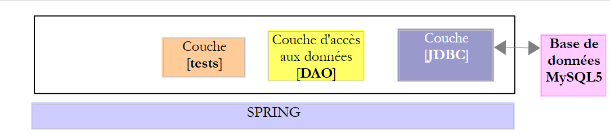
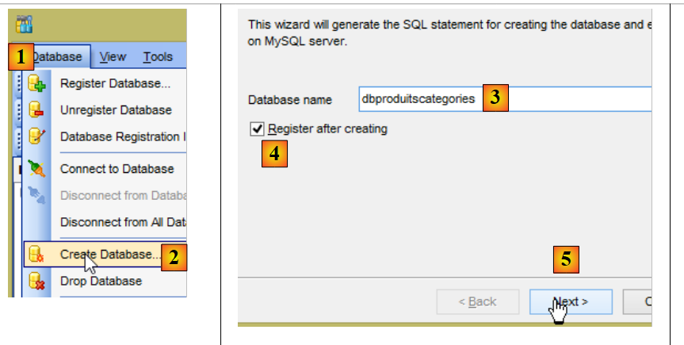
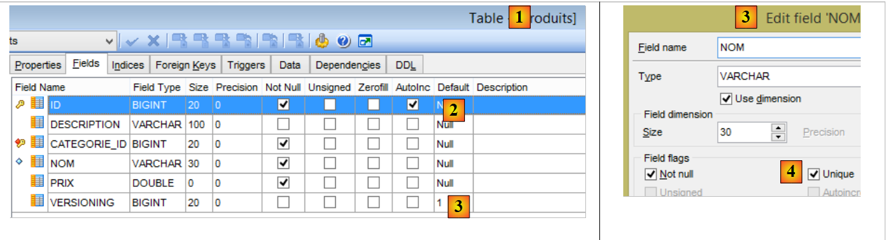
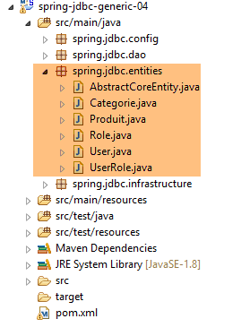
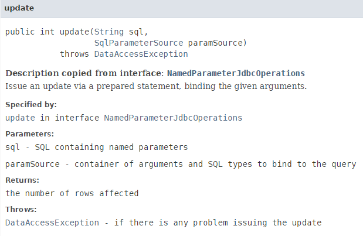
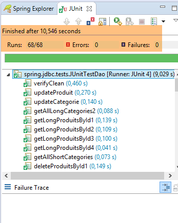

4. مقدمة إلى Spring JDBC
في هذا الفصل، سنقوم بفحص البنية التالية:
 |
هذه هي نفس البنية السابقة. سنقوم بإدخال تغييرين:
- ستحتوي قاعدة البيانات على جدولين مرتبطين بعلاقة مفتاح خارجي؛
- سيتم تنفيذ طبقة [DAO] باستخدام مكتبة [Spring JDBC]، مما يبسط إدارة واجهة برمجة تطبيقات JDBC؛
4.1. إعداد بيئة التطوير
باستخدام STS، قم باستيراد مشروع [spring-jdbc-04] الموجود في المجلد [<examples>/spring-database-generic/spring-jdbc]
 |
بالإضافة إلى ذلك، نحتاج إلى إنشاء قاعدة بيانات MySQL جديدة باستخدام عميل [MyManager] (انظر القسم 3.1):
 |
- في [3]، تستخدم الأمثلة التالية قاعدة بيانات MySQL باسم [dbproduitscategories]؛
 |
- في [9]، أدخل كلمة مرور المستخدم الجذر (كلمة المرور هذه هي "root" في هذا المستند)؛
 |
 |
- في [18]، تم إنشاء قاعدة البيانات [dbproduitscategories] فارغة. نقوم بإنشاء الجداول وتعبئتها باستخدام نص SQL [19-20]؛
 |
- في [21]، انتقل إلى المجلد [<examples>/spring-database-config/mysql/databases]؛
 |
- في [25]، تأكد من أنك في قاعدة البيانات [dbproduitscategories] وليس في قاعدة البيانات [dbproduits]؛
- في [29]، أنشأ البرنامج النصي SQL خمسة جداول. لن تُستخدم جداول [ROLES، USERS، USERS_ROLES] إلا عندما نتناول أمان خدمة الويب التي تم إنشاؤها لعرض قاعدة البيانات [dbproduitscategories] على الويب؛
4.2. قاعدة البيانات [dbproduitscategories]
قاعدة البيانات [dbproduitscategories] هي امتداد لقاعدة البيانات [dbproduits] التي تمت مناقشتها سابقًا. في حين أن المنتج في الجدول [PRODUITS] كان له فئة محددة برقم لا يحمل أي معنى معين، فإن هذا الرقم هنا سيكون مفتاحًا خارجيًا في الجدول [CATEGORIES].
جدول [PRODUCTS] هو كما يلي:
 |
- [ID]: المفتاح الأساسي المتزايد تلقائيًا لجدول [PRODUCTS]؛
- [NAME]: الاسم الفريد للمنتج [4]؛
- [PRICE]: سعر المنتج؛
- [DESCRIPTION]: وصف المنتج؛
- [VERSIONING] هو رقم إصدار المنتج. الإصدار الأولي هو 1 [3]. في كل مرة يتم تعديل المنتج، يتم زيادة رقم إصداره بواسطة الكود الذي يشغل الجدول؛
- [CATEGORY_ID]: المفتاح الخارجي في جدول [CATEGORIES] لتحديد الفئة التي ينتمي إليها المنتج؛
 |
- في [1-3]، المفتاح الخارجي [CATEGORIE_ID] لجدول [PRODUITS]. وهو يشير إلى عمود [ID] في جدول [CATEGORIES] [4-5]؛
- عند حذف فئة، يتم حذف جميع المنتجات المرتبطة بها أيضًا [6]. من المهم ملاحظة هذه النقطة لأنها تُستخدم في بناء طبقة [DAO] التي تستخدم قاعدة البيانات [dbproduitscategories]؛
جدول [CATEGORIES] كما يلي:
 |
- [ID]: مفتاح أساسي متزايد تلقائيًا؛
- [VERSIONING]: رقم إصدار الفئة؛
- [NAME]: الاسم الفريد للفئة؛
4.3. مشروع Eclipse
 |
يُنفذ مشروع [spring-jdbc-04] البنية التالية:
 |
مشروع [spring-jdbc-04] هو مشروع Maven تم تكوينه بواسطة ملف [pom.xml] التالي:
 |
<?xml version="1.0" encoding="UTF-8"?>
<project xmlns="http://maven.apache.org/POM/4.0.0" xmlns:xsi="http://www.w3.org/2001/XMLSchema-instance"
xsi:schemaLocation="http://maven.apache.org/POM/4.0.0 http://maven.apache.org/xsd/maven-4.0.0.xsd">
<modelVersion>4.0.0</modelVersion>
<groupId>dvp.spring.database</groupId>
<artifactId>spring-jdbc-generic-04</artifactId>
<version>0.0.1-SNAPSHOT</version>
<packaging>jar</packaging>
<name>spring-jdbc-generic-04</name>
<description>Demo project for Spring JdbcTemplate</description>
<parent>
<groupId>org.springframework.boot</groupId>
<artifactId>spring-boot-starter-parent</artifactId>
<version>1.2.3.RELEASE</version>
<relativePath /> <!-- lookup parent from repository -->
</parent>
<properties>
<project.build.sourceEncoding>UTF-8</project.build.sourceEncoding>
<java.version>1.8</java.version>
</properties>
<dependencies>
<!-- configuration JDBC of SGBD -->
<dependency>
<groupId>dvp.spring.database</groupId>
<artifactId>generic-config-jdbc</artifactId>
<version>0.0.1-SNAPSHOT</version>
</dependency>
<!-- Spring JdbcTemplate -->
<dependency>
<groupId>org.springframework.boot</groupId>
<artifactId>spring-boot-starter-jdbc</artifactId>
</dependency>
</dependencies>
<build>
<plugins>
<plugin>
<groupId>org.apache.maven.plugins</groupId>
<artifactId>maven-surefire-plugin</artifactId>
<version>2.18.1</version>
</plugin>
</plugins>
</build>
</project>
- الأسطر 28–32: يعتمد المشروع على مشروع [mysql-config-jdbc]، الذي يقوم بتكوين طبقة JDBC؛
- الأسطر 34–37: توفر أداة [spring-boot-starter-jdbc] مكتبات Spring JDBC؛
في النهاية، تكون التبعيات كما يلي:
 |
4.4. إعدادات الربيع
 |
فيما يلي فئة [AppConfig] التي تهيئ مشروع Spring:
package spring.jdbc.config;
import generic.jdbc.config.ConfigJdbc;
import org.apache.tomcat.jdbc.pool.DataSource;
import org.springframework.context.annotation.Bean;
import org.springframework.context.annotation.ComponentScan;
import org.springframework.context.annotation.Configuration;
import org.springframework.context.annotation.Import;
import org.springframework.jdbc.core.namedparam.NamedParameterJdbcTemplate;
import org.springframework.jdbc.core.simple.SimpleJdbcInsert;
import org.springframework.jdbc.datasource.DataSourceTransactionManager;
import org.springframework.transaction.PlatformTransactionManager;
import org.springframework.transaction.annotation.EnableTransactionManagement;
@Configuration
@ComponentScan(basePackages = { "spring.jdbc.dao" })
@EnableTransactionManagement
@Import({ generic.jdbc.config.ConfigJdbc.class })
public class AppConfig {
// data source
@Bean
public DataSource dataSource() {
// data source TomcatJdbc
DataSource dataSource = new DataSource();
// configuration access JDBC
dataSource.setDriverClassName(ConfigJdbc.DRIVER_CLASSNAME);
dataSource.setUsername(ConfigJdbc.USER_DBPRODUITSCATEGORIES);
dataSource.setPassword(ConfigJdbc.PASSWD_DBPRODUITSCATEGORIES);
dataSource.setUrl(ConfigJdbc.URL_DBPRODUITSCATEGORIES);
// initially open connections
dataSource.setInitialSize(5);
// result
return dataSource;
}
// Transaction manager
@Bean
public PlatformTransactionManager transactionManager(DataSource dataSource) {
return new DataSourceTransactionManager(dataSource);
}
// JdbcTemplate
@Bean
public NamedParameterJdbcTemplate namedParameterJdbcTemplate(DataSource dataSource) {
return new NamedParameterJdbcTemplate(dataSource);
}
// product insertion
@Bean
public SimpleJdbcInsert simpleJdbcInsertProduit(DataSource dataSource) {
return new SimpleJdbcInsert(dataSource).withTableName(ConfigJdbc.TAB_PRODUITS).usingGeneratedKeyColumns(
ConfigJdbc.TAB_PRODUITS_ID);
}
// insertion category
@Bean
public SimpleJdbcInsert simpleJdbcInsertCategorie(DataSource dataSource) {
return new SimpleJdbcInsert(dataSource).withTableName(ConfigJdbc.TAB_CATEGORIES).usingGeneratedKeyColumns(
ConfigJdbc.TAB_CATEGORIES_ID);
}
}
- السطر 16: الفئة هي فئة تكوين Spring؛
- السطر 17: سيتم فحص الحزمة [spring.jdbc.dao] بحثًا عن مكونات Spring بخلاف تلك الموجودة في فئة [AppConfig]. هذا هو المكان الذي سنجد فيه المكون الذي ينفذ طبقة [DAO]؛
- السطر 18: لن ندير المعاملات بأنفسنا بل سنتركها لـ Spring JDBC. الشيء الوحيد الذي يتعين القيام به هو توضيح الطرق التي يجب تنفيذها ضمن معاملة باستخدام توضيح Spring [@Transactional]. يضمن السطر 18 معالجة هذا التوضيح وعدم تجاهله. تتم إدارة المعاملات بواسطة أحد تبعيات مشروع Spring JDBC المستوردة عبر ملف [pom.xml]؛
- السطر 19: نستورد الحبوب المحددة بالفعل في فئة [generic.jdbc.config.ConfigJdbc] من مشروع [mysql-config-jdbc]؛
- الأسطر 23–36: مصدر البيانات [tomcat-jdbc] الذي تم تقديمه في المثال [spring-jdbc-02]؛
- الأسطر 40–42: مدير المعاملات المرتبط بمصدر البيانات المحدد سابقًا. يجب تسمية الحبة [transactionManager] لأن هذا هو الاسم المستخدم في التعليق التوضيحي [@EnableTransactionManagement]. يتم توفير [DataSourceTransactionManager] بواسطة مكتبة Spring JDBC (السطر 12)؛
- الأسطر 45–48: bean [namedParameterJdbcTemplate]، الذي سيستند إليه تنفيذ طبقة [DAO]. يتم توفير هذا bean بواسطة مكتبة Spring JDBC (السطر 10). يرتبط هذا bean أيضًا بمصدر البيانات المحدد سابقًا (السطر 47)؛
- الأسطر 51-55: سيتم استخدام bean [simpleJdbcInsertProduit] (اسم عشوائي) لإدراج منتج في جدول [PRODUITS] واسترداد المفتاح الأساسي الذي تم إنشاؤه. المعلمات المختلفة المستخدمة هي كما يلي:
- [dataSource]: مصدر البيانات [tomcat-jdbc] من الأسطر 24–36؛
- [ConfigJdbc.TAB_PRODUITS]: جدول [PRODUITS]؛
- [ConfigJdbc.TAB_CATEGORIES_ID]: عمود المفتاح الأساسي لجدول [PRODUCTS]. لاحظ أنه بالنسبة لـ PostgreSQL، يجب أن يكون اسم هذا العمود بأحرف صغيرة؛
- الأسطر 58–62: سيتم استخدام bean [simpleJdbcInsertCategorie] لإدراج فئة في جدول [CATEGORIES] واسترداد المفتاح الأساسي الذي تم إنشاؤه؛
4.5. استثناءات المشروع
 |
لقد رأينا بالفعل الفئات [UncheckedException، DaoException، ShortException] في مشروع [spring-jdbc-03]. ونحن نضيف فئة جديدة:
package spring.jdbc.infrastructure;
public class MyIllegalArgumentException extends UncheckedException {
private static final long serialVersionUID = 1L;
// manufacturers
public MyIllegalArgumentException() {
super();
}
public MyIllegalArgumentException(int code, Throwable e, String className) {
super(code, e, className);
}
}
- تشتق فئة [MyIllegalArgumentException] من فئة [UncheckedException]، وبالتالي فهي فئة غير محددة. وستُستخدم للإشارة إلى استدعاء مع معلمات غير صحيحة لطريقة في طبقة [DAO]. لم نسمها [IllegalArgumentException] لأن هذا الاستثناء موجود بالفعل في JDK، وكان هذا يتسبب أحيانًا في قيام المُجمع بإنشاء [import] غير صحيح؛
4.6. كيانات المشروع
 |
تمثل الفئات الموجودة في حزمة [spring.jdbc.entities] الصفوف في جداول قاعدة البيانات [dbproduitscategories]. في الوقت الحالي، سنتجاهل جداول [USERS، ROLES، USERS_ROLE].
جميع الكيانات تمتد من الفئة الأصلية [AbstractCoreEntity]:
package spring.jdbc.entities;
public abstract class AbstractCoreEntity {
// properties
protected Long id;
protected Long version;
// manufacturers
public AbstractCoreEntity() {
}
public AbstractCoreEntity(Long id, Long version) {
this.id = id;
this.version = version;
}
public AbstractCoreEntity(AbstractCoreEntity entity) {
this.id = entity.id;
this.version = entity.version;
}
public void setAbstractCoreEntity(AbstractCoreEntity entity) {
this.id = entity.id;
this.version = entity.version;
}
// ------------------------------------------------------------
// redefine [equals] and [hashcode]
@Override
public int hashCode() {
return (id != null ? id.hashCode() : 0);
}
@Override
public boolean equals(Object entity) {
if (!(entity instanceof AbstractCoreEntity)) {
return false;
}
String class1 = this.getClass().getName();
String class2 = entity.getClass().getName();
if (!class2.equals(class1)) {
return false;
}
AbstractCoreEntity other = (AbstractCoreEntity) entity;
return id != null && other.id != null && id.equals(other.id);
}
// getters and setters
...
}
- السطر 5: سيتم ربط الحقل [id] بالعمود [ID]، وهو المفتاح الأساسي للجداول؛
- السطر 6: سيتم ربط الحقل [version] بعمود [VERSIONING] في الجداول؛
- الأسطر 8–26: منشئات وأساليب متنوعة لإنشاء أو تهيئة كائن [AbstractCoreEntity]؛
- الأسطر 35–47: تنص طريقة [equals] على أن كائني [AbstractCoreEntity] متساويان إذا كان لهما نفس حقل [id]. من المهم أن نتذكر هنا أن كائنات [AbstractCoreEntity] ستكون تمثيلات لصفوف الجدول حيث [id] هو المفتاح الأساسي، وبالتالي لا يمكن أن يكون هناك صفان بنفس [id]؛
- الأسطر 30–33: اقتراح لـ [hashCode]؛
ستمثل فئة [Product] صفًا في جدول [PRODUCTS]:
package spring.jdbc.entities;
import com.fasterxml.jackson.annotation.JsonFilter;
@JsonFilter("jsonFilterProduit")
public class Produit extends AbstractCoreEntity {
// properties
private String nom;
private Long idCategorie;
private double prix;
private String description;
private Categorie categorie;
// manufacturers
public Produit() {
}
public Produit(Long id, Long version, String nom, Long idCategorie, double prix, String description,
Categorie categorie) {
super(id, version);
this.nom = nom;
this.idCategorie = idCategorie;
this.prix = prix;
this.description = description;
this.categorie = categorie;
}
// signature
public String toString() {
return String.format("[id=%s, version=%s, nom=%s, prix=10.2f, desc=%s, idCategorie=%s]", id, version, nom, prix,
description, idCategorie);
}
// getters and setters
...
}
- السطر 6: تمتد فئة [Product] من فئة [AbstractCoreEntity]؛
- الأسطر 8–12: الحقول [id, version, name, categoryId, price, description] تتوافق مع الأعمدة [ID, VERSIONING, NAME, CATEGORY_ID, PRICE, DESCRIPTION] في جدول [PRODUCTS]؛
- السطر 12: الكائن من النوع [Category] مع المفتاح الأساسي [categoryId]. قد يتم ملء هذا الحقل أو لا يتم ملؤه، حسب الحالة. عندما يتم ملؤه، نشير إلى منتج طويل [LongProduct]؛ وإلا، فإننا نشير إلى منتج قصير [ShortProduct]؛
- السطر 5: مرشح JSON. لاحظ أن مشروع [mysql-config-jdbc] يتضمن مكتبة JSON. المرشح ضروري لأن الحقل [category] قد يكون مملوءًا أو غير مملوء. في هذه الحالة، يختلف تمثيل JSON للمنتج. للتعامل مع هاتين الحالتين، سنقوم بتكوين مرشح [jsonFilterProduct] في السطر 5. يسمح لنا مرشح JSON بتحديد الحقول التي يجب استبعادها من تمثيل JSON ديناميكيًا. عندما نعلم أن حقل [category] لم يتم ملؤه، سنستبعده من تمثيل JSON للمنتج؛
تمثل فئة [Category] صفًا في جدول [CATEGORIES]:
package spring.jdbc.entities;
import java.util.ArrayList;
import java.util.List;
import com.fasterxml.jackson.annotation.JsonFilter;
@JsonFilter("jsonFilterCategorie")
public class Categorie extends AbstractCoreEntity {
// properties
private String nom;
public List<Produit> produits;
// manufacturers
public Categorie() {
}
public Categorie(Long id, Long version, String nom, List<Produit> produits) {
super(id, version);
this.nom = nom;
this.produits = produits;
}
// signature
public String toString() {
return String.format("[id=%s, version=%s, nom=%s]", id, version, nom);
}
// methods
public void addProduit(Produit produit) {
// add a product
if (produits == null) {
produits = new ArrayList<Produit>();
}
if (produit != null) {
// we add the product
produits.add(produit);
// set your category
produit.setCategorie(this);
produit.setIdCategorie(this.id);
}
}
// getters and setters
...
}
- السطر 9: تمتد فئة [Category] من فئة [AbstractCoreEntity]؛
- السطر 12: الحقول [id, version, name] تتوافق مع الأعمدة [ID, VERSIONING, NAME] في جدول [CATEGORIES]؛
- السطر 13: يمثل الحقل [products] قائمة المنتجات في الفئة. لا يتم ملء هذا الحقل دائمًا. وعندما لا يتم ملؤه، نشير إلى فئة مختصرة [ShortCategorie]؛ وإلا، فإننا نشير إلى فئة مطولة [LongCategorie]؛
- الأسطر 32-44: تسمح لك طريقة [addProduct] بإضافة منتج إلى الفئة (السطر 39) وتعيين خصائص الفئة (categoryID و category) في المنتج المضاف؛
- السطر 8: مرشح JSON. عندما تحتاج مكتبة JSON إلى تسلسل/إلغاء تسلسل كائن [Category]، يجب أن نخبرها بكيفية التعامل مع المرشح المسمى [jsonFilterCategory]؛
4.7. واجهة Idao<T>
 |
 |
تتميز واجهة [IDao] في طبقة [DAO] بالتوقيع التالي:
package spring.jdbc.dao;
import java.util.List;
import spring.jdbc.entities.AbstractCoreEntity;
public interface IDao<T extends AbstractCoreEntity> {
// list of all T entities
public List<T> getAllShortEntities();
public List<T> getAllLongEntities();
// special entities - short version
public List<T> getShortEntitiesById(Iterable<Long> ids);
public List<T> getShortEntitiesById(Long... ids);
public List<T> getShortEntitiesByName(Iterable<String> names);
public List<T> getShortEntitiesByName(String... names);
// special entities - long version
public List<T> getLongEntitiesById(Iterable<Long> ids);
public List<T> getLongEntitiesById(Long... ids);
public List<T> getLongEntitiesByName(Iterable<String> names);
public List<T> getLongEntitiesByName(String... names);
// update of several entities
public List<T> saveEntities(Iterable<T> entities);
public List<T> saveEntities(@SuppressWarnings("unchecked") T... entities);
// delete all entities
public void deleteAllEntities();
// deletion of multiple entities
public void deleteEntitiesById(Iterable<Long> ids);
public void deleteEntitiesById(Long... ids);
public void deleteEntitiesByName(Iterable<String> names);
public void deleteEntitiesByName(String... names);
public void deleteEntitiesByEntity(Iterable<T> entities);
public void deleteEntitiesByEntity(@SuppressWarnings("unchecked") T... entities);
}
- السطر 7: لدينا هنا واجهة [IDao] معلمة بنوع T مع شرط: يجب أن يمتد هذا النوع إلى فئة [AbstractCoreEntity] أو ينفذ واجهة [AbstractCoreEntity]. تُستخدم الكلمة الرئيسية [extends] في كلتا الحالتين. هنا، سيتم إنشاء مثيل T إما بنوع [Product] أو بنوع [Category]. في الواقع، يتضح بسرعة أننا نقوم بنفس أنواع العمليات (الإدراج، التعديل، الحذف، التحديد) على أنواع [Product] و [Category]. لذلك من المنطقي تجميع هذه الطرق في واجهة عامة؛
- اعتمادًا على السياق، تشير المصطلحات [LongEntity] و [ShortEntity] إلى حالات مختلفة:
- عندما يكون T هو النوع [Product]:
- [ShortEntity] هو المنتج دون ملء حقل [Category] الخاص به؛
- [LongEntity] هو المنتج مع ملء حقل [Category] الخاص به؛
- عندما يكون T هو النوع [Category]:
- [ShortEntity] هي الفئة التي لم يتم ملء حقل [List<Product> products] الخاص بها؛
- [LongEntity] هو المنتج مع ملء حقل [List<Product> products] الخاص به؛
- عندما يكون T هو النوع [Product]:
وبالتالي، لدينا واجهة تحتوي على 19 طريقة. معظم الطرق مكررة. لنأخذ مثال طريقة [getShortEntitiesById]:
public List<T> getShortEntitiesById(Iterable<Long> ids);
public List<T> getShortEntitiesById(Long... ids);
- السطران 1 و 3: المعلمة هي قائمة بالمفاتيح الأساسية للكيانات التي نريد الحصول على نسخة مختصرة منها. يتم تقديم هذه القائمة في شكلين مختلفين:
- السطر 1: قائمة تنفذ واجهة [Iterable<Long>]. ينفذ النوع [List<Long>] هذه الواجهة، ولكن هناك العديد من الأنواع الأخرى. لو كنا قد كتبنا [List<Long> ids]، لكان ذلك كافياً لأمثلتنا، ولكنه كان سيجبر مستخدم أمثلةنا على إجراء تحويلات إذا لم يكن المعامل الخاص بهم من النوع المتوقع بالضبط؛
- السطر 3: للأسف، لا ينفذ النوع `Long[]` واجهة `Iterable<Long>`. في هذه الحالة، سنستخدم النسخة من السطر 3. يمكن للمعلمة الرسمية [Long... ids] (3 نقاط) قبول قيم من مصفوفة أو تسلسل من المعرفات: getShortEntitiesById(id1, id2, ...)؛
سيتم تنفيذ واجهة IDao<T> نفسها من خلال البنية التالية:
 |
حيث سيتم إدراج طبقة [JPA] (Java Persistence API) بين طبقة [DAO] ومحرك JDBC الخاص بنظام إدارة قواعد البيانات (DBMS). سيسمح لنا ذلك بالحصول على طبقة اختبار مشتركة لكلا البنيتين. في كلتا الحالتين، ستقدم طبقة [DAO] واجهتين:
- IDao<Product> للوصول إلى جدول [PRODUCTS]؛
- IDao<Category> للوصول إلى جدول [CATEGORIES]؛
4.8. تنفيذ واجهة IDao<T>
|
- يتم تنفيذ واجهة IDao<Product> بواسطة فئة [DaoProduct]؛
- يتم تنفيذ واجهة IDao<Category> بواسطة فئة [DaoCategory]؛
تتفرع كل من الفئتين [DaoProduct] و[DaoCategory] عن الفئة المجردة التالية [ AbstractDao]:
package spring.jdbc.dao;
import java.util.ArrayList;
import java.util.List;
import org.springframework.beans.factory.annotation.Autowired;
import org.springframework.beans.factory.annotation.Qualifier;
import org.springframework.transaction.annotation.Transactional;
import spring.jdbc.entities.AbstractCoreEntity;
import spring.jdbc.infrastructure.MyIllegalArgumentException;
import com.google.common.collect.Lists;
public abstract class AbstractDao<T extends AbstractCoreEntity> implements IDao<T> {
// injections
@Autowired
@Qualifier("maxPreparedStatementParameters")
protected int maxPreparedStatementParameters;
// local
protected String simpleClassName = getClass().getSimpleName();
@Override
@Transactional(readOnly = true)
public List<T> getShortEntitiesById(Iterable<Long> ids) {
// argument validity
List<T> entities = checkNullOrEmptyArgument(true, ids);
if (entities != null) {
return entities;
}
// obtaining by tranches
entities = new ArrayList<T>();
int taille = maxPreparedStatementParameters;
List<Long> listIds = Lists.newArrayList(ids);
int nbIds = listIds.size();
for (int i = 0; i < nbIds; i += taille) {
int limit = Math.min(nbIds, i + taille);
entities.addAll(getShortEntitiesById(listIds.subList(i, limit)));
}
// result
return entities;
}
@Override
@Transactional(readOnly = true)
public List<T> getShortEntitiesById(Long... ids) {
// argument validity
List<T> entities = checkNullOrEmptyArgument(true, ids);
if (entities != null) {
return entities;
}
// result
return getShortEntitiesById((Iterable<Long>) Lists.newArrayList(ids));
}
@Override
@Transactional(readOnly = true)
public List<T> getShortEntitiesByName(Iterable<String> names) {
...
}
@Override
@Transactional(readOnly = true)
public List<T> getShortEntitiesByName(String... names) {
...
}
@Override
@Transactional(readOnly = true)
public List<T> getLongEntitiesById(Iterable<Long> ids) {
...
}
@Override
@Transactional(readOnly = true)
public List<T> getLongEntitiesById(Long... ids) {
...
}
@Override
@Transactional(readOnly = true)
public List<T> getLongEntitiesByName(Iterable<String> names) {
...
}
@Override
@Transactional(readOnly = true)
public List<T> getLongEntitiesByName(String... names) {
...
}
@Override
@Transactional
public List<T> saveEntities(Iterable<T> entities) {
...
}
@Override
@Transactional
public List<T> saveEntities(@SuppressWarnings("unchecked") T... entities) {
...
}
@Override
public void deleteEntitiesById(Iterable<Long> ids) {
...
}
@Override
public void deleteEntitiesById(Long... ids) {
...
}
@Override
public void deleteEntitiesByName(Iterable<String> names) {
...
}
@Override
public void deleteEntitiesByName(String... names) {
...
}
@Override
public void deleteEntitiesByEntity(Iterable<T> entities) {
...
}
@Override
public void deleteEntitiesByEntity(@SuppressWarnings("unchecked") T... entities) {
...
}
protected void deleteEntitiesByEntity(List<T> entities) {
...
}
@Override
@Transactional(readOnly = true)
public abstract List<T> getAllShortEntities();
@Override
@Transactional(readOnly = true)
public abstract List<T> getAllLongEntities();
@Override
public abstract void deleteAllEntities();
// méthodes privées ----------------------------------------------
private <T2> List<T> checkNullOrEmptyArgument(boolean checkEmpty, Iterable<T2> elements) {
...
}
@SuppressWarnings("unchecked")
private <T2> List<T> checkNullOrEmptyArgument(boolean checkEmpty, T2... elements) {
...
}
// méthodes protégées ----------------------------------------------
abstract protected List<T> getShortEntitiesById(List<Long> ids);
abstract protected List<T> getShortEntitiesByName(List<String> names);
abstract protected List<T> getLongEntitiesById(List<Long> ids);
abstract protected List<T> getLongEntitiesByName(List<String> names);
abstract protected List<T> saveEntities(List<T> entities);
abstract protected void deleteEntitiesById(List<Long> ids);
abstract protected void deleteEntitiesByName(List<String> names);
}
- السطر 15: فئة [AbstractDao] هي فئة مجردة (الكلمة الرئيسية `abstract`). وبالتالي، لا يمكن إنشاء مثيل لها. يمكن فقط إنشاء فئات مشتقة منها. لهذه الفئة عدة أدوار:
- تحديد طبيعة المعاملة التي يتم فيها تنفيذ كل طريقة؛
- لتولي أكبر عدد ممكن من المهام المشتركة لكل من تطبيقَي واجهتي [IDao<Product>] و[IDao<Category>]. ويشمل ذلك في المقام الأول التحقق من صحة المعلمات. ولا تُقبل المعلمات ذات القيمة "null" والقوائم الفارغة؛
- توحيد أنواع المعلمات `T... params` و`Iterable<T> params` في نوع واحد: `List<T> params`؛
- تفويض المهمة إلى الفئات الفرعية بمجرد أن تصبح خاصة بإحدى الواجهتين؛
بفضل توحيد معلمات الطرق المختلفة التي تنفذها فئة [AbstractDao]، سيكون على الفئات الفرعية [DaoProduit] و [DaoCategorie] تنفيذ 10 طرق فقط بدلاً من 19:
// methods implemented by child classes ----------------------------------------------
abstract protected List<T> getShortEntitiesById(List<Long> ids);
abstract protected List<T> getShortEntitiesByName(List<String> names);
abstract protected List<T> getLongEntitiesById(List<Long> ids);
abstract protected List<T> getLongEntitiesByName(List<String> names);
abstract protected List<T> saveEntities(List<T> entities);
abstract protected void deleteEntitiesById(List<Long> ids);
abstract protected void deleteEntitiesByName(List<String> names);
@Override
@Transactional(readOnly = true)
public abstract List<T> getAllShortEntities();
@Override
@Transactional(readOnly = true)
public abstract List<T> getAllLongEntities();
@Override
public abstract void deleteAllEntities();
دعونا نلقي نظرة على بعض طرق فئة [AbstractDao].
طريقة [getShortEntitiesById]
تسترد هذه الطريقة النسخة المختصرة للكيانات التي تم توفير مفاتيح أساسية لها.
// injections
@Autowired
@Qualifier("maxPreparedStatementParameters")
protected int maxPreparedStatementParameters;
// local
protected String simpleClassName = getClass().getSimpleName();
@Override
@Transactional(readOnly = true)
public List<T> getShortEntitiesById(Iterable<Long> ids) {
...
}
- الأسطر 2–4: نقوم بإدخال حبة [maxPreparedStatementParameters] المحددة في ملف التكوين [ConfigJdbc]، والتي تقوم بتكوين طبقة JDBC لنظام إدارة قواعد البيانات (DBMS) محدد:
// max number of parameters of a [PreparedStatement]
public final static int MAX_PREPAREDSTATEMENT_PARAMETERS = 10000;
@Bean(name = "maxPreparedStatementParameters")
public int maxPreparedStatementParameters() {
return MAX_PREPAREDSTATEMENT_PARAMETERS;
}
- الأسطر 1–7: تحدد حبة [maxPreparedStatementParameters]، التي تحدد الحد الأقصى لعدد المعلمات التي يمكن تمريرها إلى [PreparedStatement]. لم يظهر هذا المطلب مع نظام إدارة قواعد البيانات MySQL، الذي كان يقبل 10,000 معلمة لـ [PreparedStatement]. أثناء الاختبار باستخدام نظام إدارة قواعد البيانات SQL Server، تم إصدار استثناء يشير إلى أن الحد الأقصى لعدد المعلمات لـ [PreparedStatement] هو 2,100. لذلك، أصبح هذا الرقم معلمة تكوين لمختلف أنظمة إدارة قواعد البيانات. ولذلك يجب وضعه في مشروع التكوين [sgbd-config-jdbc] لكل نظام إدارة قواعد بيانات؛
لنعد إلى كود طريقة [getShortEntitiesById]:
// injections
@Autowired
@Qualifier("maxPreparedStatementParameters")
protected int maxPreparedStatementParameters;
// local
protected String simpleClassName = getClass().getSimpleName();
@Override
@Transactional(readOnly = true)
public List<T> getShortEntitiesById(Iterable<Long> ids) {
...
}
- السطر 7: اسم الفئة. يُستخدم كمعلمة لأحد منشئات فئة الاستثناء [DaoException]؛
- السطر 10: تشير التعليقات التوضيحية [@Transactional(readOnly = true)] إلى أن الدالة يجب أن تُنفَّذ ضمن معاملة للقراءة فقط. قد يتساءل المرء عن فائدة مثل هذه المعاملة، حيث إن الدالة لا تقوم إلا بعمليات قراءة، وبالتالي، في حالة الفشل، لا يوجد ما يمكن التراجع عنه. يوصي مؤلف مكتبة [Spring Data] بهذا الأمر ويشرح أسبابه. وقد اتبعت نصيحته؛
وجاء نص الدالة كما يلي:
@Override
@Transactional(readOnly = true)
public List<T> getShortEntitiesById(Iterable<Long> ids) {
// validité de l'argument
List<T> entities = checkNullOrEmptyArgument(true, ids);
if (entities != null) {
return entities;
}
...
}
- السطر 5: يتم التحقق من صحة المعلمة [ids] بالطريقة التالية:
private <T2> List<T> checkNullOrEmptyArgument(boolean checkEmpty, Iterable<T2> elements) {
// elements null ?
if (elements == null) {
throw new MyIllegalArgumentException(222, new NullPointerException("L'argument ne peut être null"), simpleClassName);
}
// elements vide ?
if (!elements.iterator().hasNext()) {
if (checkEmpty) {
throw new MyIllegalArgumentException(223, new RuntimeException("l'argument ne peut être une liste vide"),
simpleClassName);
} else {
return new ArrayList<T>();
}
}
// résultat par défaut
return null;
}
- السطر 1: طريقة [checkNullOrEmptyArgument] هي طريقة عامة معلمة بنوع <T2>. T2 هو نوع العناصر التي يتم تمريرها كمعلمة ثانية إلى الطريقة. يمكن أن يكون هذا [Long، String، AbstractCoreEntity]؛
- السطر 1: تأخذ الطريقة [checkNullOrEmptyArgument] معلمتين:
- [Iterable<T2> elements]: المعلمة المراد اختبارها؛
- [checkEmpty]: يتم تعيينها على true إذا كنا بحاجة إلى التحقق من أن المعلمة السابقة هي قائمة غير فارغة؛
- الأسطر 4-6: نتحقق من أن المعلمة [elements] ليست فارغة. إذا كانت كذلك، يتم إلقاء استثناء [MyIllegalArgumentException]؛
- الأسطر 8-15: إذا كانت القائمة فارغة وكان من المفترض أن نتحقق من أنها غير فارغة، فإننا نرمي استثناء [MyIllegalArgumentException]؛
- السطر 13: إذا كانت القائمة فارغة ولم يكن من المفترض أن نتحقق من أنها غير فارغة، فإننا نُرجع قائمة فارغة من العناصر من النوع T. تحتوي واجهة [Iterable<T2>] على طريقة [iterator()] تسمح لـ بالتكرار عبر عناصر القائمة التي تنفذ الواجهة. هناك طريقتان مفيدتان لهذا المكرر:
- [iterator].hasNext(): ترجع true إذا كانت القائمة لا تزال تحتوي على عنصر للمعالجة، و false في حالة عدم وجود عنصر؛
- [iterator].next(): تُرجع العنصر الحالي في القائمة وتُقدم المُكرر بمقدار عنصر واحد؛
- أخيرًا،
- إذا كانت الحجة [T2... elements] فارغة أو خالية، يتم إلقاء استثناء [MyIllegalArgumentException]؛
- إذا كانت الحجة [T2... elements] قائمة فارغة وكان ذلك صحيحًا، يتم إرجاع قائمة فارغة من العناصر من النوع T؛
توجد طريقة مماثلة عندما تكون الحجة المراد اختبارها من النوع [T2... elements]:
@SuppressWarnings("unchecked")
private <T2> List<T> checkNullOrEmptyArgument(boolean checkEmpty, T2... elements) {
...
}
لنعد إلى كود طريقة [getShortEntitiesById]:
@Override
@Transactional(readOnly = true)
public List<T> getShortEntitiesById(Iterable<Long> ids) {
// argument validity
List<T> entities = checkNullOrEmptyArgument(true, ids);
// obtaining by tranches
entities = new ArrayList<T>();
int taille = maxPreparedStatementParameters;
List<Long> listIds = Lists.newArrayList(ids);
int nbIds = listIds.size();
for (int i = 0; i < nbIds; i += taille) {
int limit = Math.min(nbIds, i + taille);
entities.addAll(getShortEntitiesById(listIds.subList(i, limit)));
}
// result
return entities;
}
- السطر 7: إذا وصلنا إلى هذه النقطة، فهذا يعني أن الحجة [Iterable<Long> ids] صالحة؛
- الأسطر 7–14: سنرى لاحقًا أن طريقة [getShortEntitiesById] سيتم تنفيذها بواسطة نوع [PreparedStatement] الذي سيأخذ كمعلمات قائمة المفاتيح الأساسية المطلوب البحث عنها. على سبيل المثال:
public final static String SELECT_SHORTCATEGORIE_BYID = "SELECT c.ID as c_ID, c.VERSIONING as c_VERSIONING, c.NOM as c_NOM FROM CATEGORIES c WHERE c.ID in (:ids)";
:ids هو معلمة ستكون قيمتها الفعلية من النوع List<Long>. سيتم تمرير كل عنصر من عناصر هذه القائمة كمعلمة ? في [PreparedStatement]. ومع ذلك، فقد حددنا أن هذا النوع يقبل عددًا أقصى من المعلمات، وهو رقم تم تعيينه بواسطة حقل [maxPreparedStatementParameters] الخاص بالفئة؛
- السطر 7: قائمة كيانات T التي سيتم إرجاعها بواسطة طريقة [getShortEntitiesById]. سيتم إنشاء هذه القائمة على شكل مجموعات من عناصر [maxPreparedStatementParameters]؛
- السطر 9: من وسيطة [Iterable<Long> ids]، نقوم بإنشاء نوع [List<Long> listIds]. فئة [Lists] هي فئة من مكتبة Google Guava التي توفر العديد من الطرق الثابتة لمعالجة مجموعات الكائنات. تم استيراد مكتبة Google Guava (pom.xml) بواسطة مشروع Maven [mysql-config-jdbc]:
<!-- Google Guava -->
<dependency>
<groupId>com.google.guava</groupId>
<artifactId>guava</artifactId>
<version>16.0.1</version>
</dependency>
- السطر 10: عدد كيانات T المطلوب البحث عنها في قاعدة البيانات؛
- الأسطر 11-13: يتم البحث عنها في مجموعات من [size = maxPreparedStatementParameters] عنصر؛
- السطر 12: عملية حسابية لمنع تجاوز نهاية قائمة [listIds]؛
- السطر 13: يتم الحصول على الكيانات T عن طريق استدعاء [getShortEntitiesById(listIds.subList(i, limit))]. يتم تعريف هذه الطريقة في الفئة على النحو التالي:
abstract protected List<T> getShortEntitiesById(List<Long> ids);
وبالتالي، فإن الفئة الفرعية هي التي ستسترد كيانات T من قاعدة البيانات:
- [DaoProduct] إذا كان T من النوع [Product]؛
- [DaoCategory] إذا كان T من النوع [Category]؛
تتمثل فائدة هذا النهج في الفئة الأصلية في أمرين:
- توقيع طريقة [getShortEntitiesById] في الفئة الفرعية فريد: حجتها من النوع [List<Long> ids]؛
- لا يتعين على الفئة الفرعية التعامل مع مشكلة معلمات [maxPreparedStatementParameters] الخاصة بـ [PreparedStatement]. فقد تولت الفئة الأصلية معالجة ذلك نيابة عنها؛
- السطر 13: تُضاف الكيانات التي تعيدها الفئة الفرعية إلى قائمة الكيانات التي ستعيدها الفئة الأصلية (السطر 16)؛
الآن، دعونا نلقي نظرة على تنفيذ الطريقة الأخرى للفئة، [getShortEntitiesById]:
@Override
@Transactional(readOnly = true)
public List<T> getShortEntitiesById(Long... ids) {
// validité de l'argument
List<T> entities = checkNullOrEmptyArgument(true, ids);
// résultat
return getShortEntitiesById((Iterable<Long>) Lists.newArrayList(ids));
}
- السطر 3: تغير نوع الحجة: Long... ids;
- السطر 5: يتم اختبار صحة هذه الحجة؛
- السطر 7: نستدعي الطريقة [getShortEntitiesById] التي وصفناها للتو. هنا مرة أخرى، نستخدم فئة [Lists] من مكتبة [Google Guava]. لاحظ أنه يجب علينا إجراء تحويل صريح إلى النوع [Iterable<Long>] لمساعدة المُترجم على اختيار الطريقة الصحيحة، لأن الطريقة [getShortEntitiesById] لها ثلاث توقيعات في الفئة:
- List<T> getShortEntitiesById(Long... ids);
- List<T> getShortEntitiesById(Iterable<Long> ids);
- List<T> getShortEntitiesById(List<Long> ids)، وهي طريقة مجردة ويتم تنفيذها بواسطة الفئة الفرعية؛
لن نعلق أكثر على الفئة المجردة [AbstractDao]، الفئة الأم لفئتي [DaoProduit] و [DaoCategorie]. سنكتفي بالإشارة إلى أنه من المفيد أحيانًا تجميع السلوكيات المشتركة بين عدة فئات في فئة أم، سواء كانت مجردة أم لا. بعد هذا العمل، لم يتبق للفئات الفرعية سوى تنفيذ الطرق التالية:
// methods implemented by child classes ----------------------------------------------
abstract protected List<T> getShortEntitiesById(List<Long> ids);
abstract protected List<T> getShortEntitiesByName(List<String> names);
abstract protected List<T> getLongEntitiesById(List<Long> ids);
abstract protected List<T> getLongEntitiesByName(List<String> names);
abstract protected List<T> saveEntities(List<T> entities);
abstract protected void deleteEntitiesById(List<Long> ids);
abstract protected void deleteEntitiesByName(List<String> names);
@Override
@Transactional(readOnly = true)
public abstract List<T> getAllShortEntities();
@Override
@Transactional(readOnly = true)
public abstract List<T> getAllLongEntities();
@Override
public abstract void deleteAllEntities();
يوضح الكود الوارد في القسم 4.8 الأنواع المختلفة من المعاملات المستخدمة لكل طريقة. لاحظ النقاط التالية:
- يتم توضيح الطرق التي تقرأ قاعدة البيانات بعلامة [@Transactional(readOnly = true)]؛
- يتم توضيح الطرق التي تقوم بتعديل قاعدة البيانات بعلامة [@Transactional]؛
- الطرق [delete] غير مزودة بعلامة، وبالتالي لا تعمل ضمن معاملة. الفكرة هي أنه في حالة فشل عملية الحذف، فمن المحتمل ألا يرغب المستخدم في التراجع عن جميع العمليات الناجحة التي تمت سابقًا؛
4.9. فئة [DaoCategorie]
 |
|
تُنفِّذ فئة [DaoCategorie] واجهة [IDao<Categorie>]، التي تتيح الوصول إلى البيانات الموجودة في جدول [CATEGORIES] بقاعدة بيانات MySQL [dbproduitscategories]. وفيما يلي هيكلها الأساسي:
package spring.jdbc.dao;
import generic.jdbc.config.ConfigJdbc;
import java.sql.ResultSet;
import java.sql.SQLException;
import java.util.ArrayList;
import java.util.Collections;
import java.util.HashMap;
import java.util.List;
import java.util.Map;
import org.springframework.beans.factory.annotation.Autowired;
import org.springframework.jdbc.core.RowMapper;
import org.springframework.jdbc.core.namedparam.MapSqlParameterSource;
import org.springframework.jdbc.core.namedparam.NamedParameterJdbcTemplate;
import org.springframework.jdbc.core.namedparam.SqlParameterSource;
import org.springframework.jdbc.core.namedparam.SqlParameterSourceUtils;
import org.springframework.jdbc.core.simple.SimpleJdbcInsert;
import org.springframework.stereotype.Component;
import spring.jdbc.entities.Categorie;
import spring.jdbc.entities.Produit;
import spring.jdbc.infrastructure.DaoException;
import com.google.common.collect.Lists;
@Component
public class DaoCategorie extends AbstractDao<Categorie> {
// constants
// injections
@Autowired
private NamedParameterJdbcTemplate namedParameterJdbcTemplate;
@Autowired
private SimpleJdbcInsert simpleJdbcInsertCategorie;
@Autowired
private IDao<Produit> daoProduit;
@Override
public List<Categorie> getAllShortEntities() {
...
}
@Override
public List<Categorie> getAllLongEntities() {
...
}
@Override
public void deleteAllEntities() {
...
}
@Override
protected List<Categorie> getShortEntitiesById(List<Long> ids) {
...
}
@Override
protected List<Categorie> getShortEntitiesByName(List<String> names) {
...
}
@Override
protected List<Categorie> getLongEntitiesById(List<Long> ids) {
...
}
@Override
protected List<Categorie> getLongEntitiesByName(List<String> names) {
...
}
@Override
protected List<Categorie> saveEntities(List<Categorie> entities) {
...
}
@Override
protected void deleteEntitiesById(List<Long> ids) {
...
}
@Override
protected void deleteEntitiesByName(List<String> names) {
...
}
...
}
// --------------------- mappers
class ShortCategorieMapper implements RowMapper<Categorie> {
....
}
class LongCategorieMapper implements RowMapper<Categorie> {
....
}
- السطر 28: فئة [DaoCategorie] هي مكون Spring، وبالتالي يمكن حقنها في مكونات Spring الأخرى؛
- السطر 29: تمتد فئة [DaoCategorie] إلى الفئة المجردة [AbstractDao<Categorie>]، مما يجعلها تنفيذًا لواجهة [IDao<Categorie>]؛
- الأسطر 34-37: حقن حبوب محددة في فئة [AppConfig] الموصوفة في القسم 4.4؛
- السطور 38-39: حقن مرجع إلى فئة [DaoProduit]، التي تنفذ واجهة [IDao<Produit>] التي تدير الوصول إلى البيانات في جدول [PRODUITS]؛
- الأسطر 41–89: تنفيذ واجهة [IDao<Category>]؛
- الأسطر 95–101: فئتان داخليتان تنفذان واجهة [RowMapper<T>]؛
دعونا نفحص الطرق واحدة تلو الأخرى.
4.9.1. طريقة [getAllShortEntities]
تُرجع الطريقة [getAllShortEntities] جميع الفئات من الجدول [CATEGORIES] في صيغتها المختصرة:
@Override
public List<Categorie> getAllShortEntities() {
try {
return namedParameterJdbcTemplate.query(ConfigJdbc.SELECT_ALLSHORTCATEGORIES, new ShortCategorieMapper());
} catch (Exception e) {
throw new DaoException(202, e, simpleClassName);
}
}
تعتمد جميع الطرق على كائن [namedParameterJdbcTemplate] المحدد في ملف تكوين Spring والمقدم من مكتبة Spring JDBC. ويحتوي هذا الكائن على العديد من الطرق. والطريقة المستخدمة أعلاه هي كما يلي:

- [sql] هي عبارة SQL المراد تنفيذها؛
- [rowMapper] هو مثيل لواجهة [RowMapper<T>] التالية:

الفكرة هي كما يلي:
- تقوم الطريقة [namedParameterJdbcTemplate].query(String sql, RowMapper<T> rowMapper) بتنفيذ عبارة SQL [Select]. وهي تتعامل مع أي استثناءات، بالإضافة إلى فتح وإغلاق الاتصال بنظام إدارة قواعد البيانات (DBMS). الشيء الوحيد الذي لا تستطيع فعله هو تغليف عناصر [ResultSet] — الكائنات التي تحصل عليها — في نوع [Category]، لأنها لا تعرف التعيين بين حقول نوع [Category] وأعمدة [ResultSet]. سنرى لاحقًا أن هذا التعيين يتم إنشاؤه باستخدام تقنية JPA، والتي ستقوم تلقائيًا بتغليف عناصر [ResultSet] في مثيلات من النوع T. في الوقت الحالي، المعلمة الثانية لطريقة [query] هي مثيل لواجهة [RowMapper<T>] قادرة على تنفيذ هذا التغليف؛
لنعد إلى الكود:
@Override
public List<Categorie> getAllShortEntities() {
try {
return namedParameterJdbcTemplate.query(ConfigJdbc.SELECT_ALLSHORTCATEGORIES, new ShortCategorieMapper());
} catch (Exception e) {
throw new DaoException(202, e, simpleClassName);
}
}
بيان SQL [ConfigJdbc.SELECT_ALLSHORTCATEGORIES] هو كما يلي:
public final static String SELECT_ALLSHORTCATEGORIES = "SELECT c.ID as c_ID, c.VERSIONING as c_VERSIONING, c.NOM as c_NOM FROM CATEGORIES c";
يسترد الاستعلام الأعمدة [ID، VERSIONING، NOM] من الجدول [CATEGORIES]. سنستخدم باستمرار الصيغة التالية:
SELECT t1.COL1 as t1_COL1, t1.COL2 as t1_COL2 FROM TABLE1 t1, TABLE2 t2 WHERE ...
المهم هو تسمية الأعمدة التي ترجعها عبارة SELECT باستخدام السمة [as column_name]. هذه هي الطريقة الوحيدة لضمان قابلية النقل بين أنظمة إدارة قواعد البيانات (DBMS)، حيث أن لكل منها طريقتها الخاصة في تسمية الأعمدة التي ترجعها عبارة SELECT، والتي قد تتضمن أعمدة من جداول مختلفة تحمل نفس الاسم (مثل ID أو NAME أو VERSIONING في حالتنا). نحل هذا الغموض عن طريق تحديد الأسماء التي يجب أن تحملها هذه الأعمدة.
الفئة الداخلية [ShortCategorieMapper] هي كما يلي:
class ShortCategorieMapper implements RowMapper<Categorie> {
@Override
public Categorie mapRow(ResultSet rs, int rowNum) throws SQLException {
return new Categorie(rs.getLong("c_ID"), rs.getLong("c_VERSIONING"), rs.getString("c_NOM"), null);
}
}
- السطر 1: تُنفذ فئة [ShortCategorieMapper] واجهة [RowMapper<Categorie>]، وبالتالي، يجب أن تُنفذ طريقة [mapRow] في السطرين 4-5، والتي تتمثل مهمتها في تغليف صف من [ResultSet rs] الناتج عن عبارة [SELECT] في نوع [Categorie]؛
- السطر 5: يتم تنفيذ هذا التغليف. لاحظ أن الاسم المستخدم بواسطة طرق [rs.getType(name)] هو الاسم المستخدم في سمات [as name] لأعمدة SELECT؛
وبذلك حصلنا على قائمة الفئات في صيغتها المختصرة دون معالجة الاستثناءات أو إدارة الاتصال. هذه هي ميزة مكتبة Spring JDBC، التي تتولى كل ما يمكن تجريده في إدارة عناصر الجدول وتترك للمطور معالجة ما لا يمكن تجريده.
4.9.2. طريقة [getAllLongEntities]
تُرجع طريقة [getAllLongEntities] جميع الفئات من جدول [CATEGORIES] في صيغتها الطويلة:
@Override
public List<Categorie> getAllLongEntities() {
try {
return filterCategories(namedParameterJdbcTemplate.query(ConfigJdbc.SELECT_ALLLONGCATEGORIES,
new LongCategorieMapper()));
} catch (Exception e) {
throw new DaoException(223, e, simpleClassName);
}
}
بيان SQL [ConfigJdbc.SELECT_ALLLONGCATEGORIES] هو كما يلي:
public final static String SELECT_ALLLONGCATEGORIES = "SELECT p.ID as p_ID, p.VERSIONING as p_VERSION, p.NOM as p_NOM, p.PRIX as p_PRIX, p.DESCRIPTION as p_DESCRIPTION, p.CATEGORIE_ID AS p_CATEGORIE_ID, c.ID as c_ID, c.NOM as c_NOM, c.VERSIONING as c_VERSION FROM PRODUITS p RIGHT JOIN CATEGORIES c ON p.CATEGORIE_ID=c.ID";
الهدف هو استرداد الفئات مع المنتجات المرتبطة بها. ويتحقق ذلك عن طريق ربط جدول [CATEGORIES] بجدول [PRODUCTS] باستخدام المفتاح الخارجي [CATEGORY_ID] من جدول [PRODUCTS] إلى جدول [CATEGORIES]. تسترد صيغة [FROM PRODUCTS p RIGHT JOIN CATEGORIES c ON p.CATEGORY_ID=c.ID] أيضًا الفئات التي لا توجد لها منتجات مرتبطة بها. في هذه الحالة، يُرجع استعلام SELECT فئة ومنتجًا مع تعيين جميع الأعمدة إلى NULL.
فئة [LongCategorieMapper] هي كما يلي:
class LongCategorieMapper implements RowMapper<Categorie> {
@Override
public Categorie mapRow(ResultSet rs, int rowNum) throws SQLException {
Categorie categorie = new Categorie(rs.getLong("c_ID"), rs.getLong("c_VERSION"), rs.getString("c_NOM"), null);
List<Produit> produits = new ArrayList<Produit>();
long idProduit = rs.getLong("p_ID");
// cas de la catégorie sans produits
if (!rs.wasNull()) {
produits.add(new Produit(idProduit, rs.getLong("p_VERSION"), rs.getString("p_NOM"), rs.getLong("p_CATEGORIE_ID"),
rs.getDouble("p_PRIX"), rs.getString("p_DESCRIPTION"), categorie));
}
categorie.setProduits(produits);
return categorie;
}
}
- السطر 4: يجب أن تُرجع طريقة [mapRow] كائن [Category] مع ملء حقل [products] الخاص به، استنادًا إلى صف من [ResultSet] الذي تم إرجاعه بواسطة عبارة SELECT السابقة؛
في النهاية، العملية:
[namedParameterJdbcTemplate.query(ConfigJdbc.SELECT_ALLLONGCATEGORIES,new LongCategorieMapper())]
قائمة من النوع:
حيث ستحتوي كل فئة [ci] على حقل [products] وهو قائمة من المنتجات تحتوي على عنصر واحد [productsij]. الآن، نحتاج إلى القائمة التالية:
حيث تحتوي كل فئة [ci] على حقل [products] يمثل قائمة المنتجات [producti1, producti2, ...]. ويتم تحقيق ذلك عن طريق تمرير قائمة الفئات إلى دالة خاصة [filterCategories]:
@Override
public List<Categorie> getAllLongEntities() {
try {
return filterCategories(namedParameterJdbcTemplate.query(ConfigJdbc.SELECT_ALLLONGCATEGORIES,
new LongCategorieMapper()));
} catch (Exception e) {
throw new DaoException(223, e, simpleClassName);
}
}
طريقة [filterCategories] هي كما يلي:
private List<Categorie> filterCategories(List<Categorie> categories) {
if (categories.size() == 0) {
return categories;
}
// catégories à rendre
List<Categorie> cats = new ArrayList<Categorie>();
// on parcourt la liste des catégories obtenues
for (Categorie categorie : categories) {
boolean trouve = false;
for (Categorie cat : cats) {
if (categorie.equals(cat)) {
cat.addProduit(categorie.getProduits().get(0));
trouve = true;
break;
}
}
// trouvé ?
if (!trouve) {
cats.add(categorie);
}
}
// résultat
return cats;
}
- السطر 1: [List<Category> categories] هي قائمة الفئات المراد تصفية (أو تجميع)؛
- السطر 6: قائمة الفئات التي سيتم إرجاعها إلى المستدعي؛
- الأسطر 8–21: تتم معالجة كل فئة في القائمة المراد تصفيتها؛
- الأسطر 10–16: نتحقق مما إذا كانت الفئة الحالية [category] موجودة بالفعل في قائمة الفئات [cats] المراد إنشاؤها (لاحظ أن فئتين تعتبران متساويتين إذا كان لهما نفس المفتاح الأساسي، انظر القسم 4.6)؛
- الأسطر 11-14: إذا كان هذا هو الحال بالفعل، يتم إضافة المنتج الموجود في [categorie] إلى قائمة المنتجات في [cat]؛
- الأسطر 18-20: إذا لم تكن الفئة الحالية [categorie] موجودة بالفعل في قائمة الفئات [cats] المراد إنشاؤها، يتم إضافتها إليها مع قائمة منتجاتها، التي تحتوي على عنصر واحد؛
لننظر إلى الحالة التي تعرض فيها عبارة SQL SELECT فئات بدون منتجات مرتبطة بها. ما الكيان الذي تعرضه فئة [LongCategorieMapper]؟
class LongCategorieMapper implements RowMapper<Categorie> {
@Override
public Categorie mapRow(ResultSet rs, int rowNum) throws SQLException {
Categorie categorie = new Categorie(rs.getLong("c_ID"), rs.getLong("c_VERSION"), rs.getString("c_NOM"), null);
List<Produit> produits = new ArrayList<Produit>();
long idProduit = rs.getLong("p_ID");
// cas de la catégorie sans produits
if (!rs.wasNull()) {
produits.add(new Produit(idProduit, rs.getLong("p_VERSION"), rs.getString("p_NOM"), rs.getLong("p_CATEGORIE_ID"),
rs.getDouble("p_PRIX"), rs.getString("p_DESCRIPTION"), categorie));
}
categorie.setProduits(produits);
return categorie;
}
}
إذا عادت عبارة SQL SELECT بفئة لا تحتوي على أي منتجات، فإن أعمدة المنتج التي يتم إرجاعها مع الفئة تحتوي جميعها على قيمة SQL NULL. يتم التعامل مع هذه الحالة في الأسطر 7–9:
- السطر 7: استرداد المفتاح الأساسي للمنتج كعدد صحيح طويل؛
- السطر 9: نتحقق مما إذا كانت القيمة المقروءة هي SQL NULL (rs.wasNull). إذا لم تكن كذلك، نضيف المنتج إلى القائمة في السطر 6؛ وإلا، لا يتم إضافة أي شيء وتبقى قائمة المنتجات فارغة.
لاحظ أنه في جميع الحالات، نُرجع فئة تحتوي على حقل [products] غير فارغ.
4.9.3. طريقة [getShortEntitiesById]
تشبه طريقة [getShortEntitiesById] طريقة [getAllShortEntities]، باستثناء أنها تُرجع فقط الكيانات التي تم تحديد مفاتيحها الأساسية في قائمة:
@Override
protected List<Categorie> getShortEntitiesById(List<Long> ids) {
try {
return namedParameterJdbcTemplate.query(ConfigJdbc.SELECT_SHORTCATEGORIE_BYID,
Collections.singletonMap("ids", ids), new ShortCategorieMapper());
} catch (Exception e) {
throw new DaoException(203, e, simpleClassName);
}
}
- السطر 4: توقيع طريقة [query] المستخدمة هو كما يلي:

المعلمة الأولى هي عبارة SQL [Select] معلمة. والثانية هي قاموس يربط كل معلمة بقيمة. والثالثة هي مثيل الفئة التي تغلف صفًا من [ResultSet] الناتج عن [Select] في كائن من النوع T؛
- السطر 4: عبارة [Select] في SQL المعلمة هي كما يلي:
public final static String SELECT_SHORTCATEGORIE_BYID = "SELECT c.ID as c_ID, c.VERSIONING as c_VERSIONING, c.NOM as c_NOM FROM CATEGORIES c WHERE c.ID in (:ids)";
يسترد هذا الاستعلام من جدول [CATEGORIES] الفئات التي توجد مفاتيحها الأساسية في القائمة :ids.
- السطر 5: المعلمة الثانية لطريقة [query] هنا هي قاموس يربط المفتاح 'ids' (المعلمة الأولى) بقائمة [ids] التي تم تمريرها في السطر 1 كمعلمة لطريقة [getShortEntitiesById]. تنتمي فئة [Collections] إلى مكتبة [Google Guava]، التي ناقشناها سابقًا. [Collections.singleMap] تُرجع قاموسًا يحتوي على عنصر واحد؛
- السطر 5: الفئة المسؤولة عن تغليف صف من [ResultSet] الناتج عن [Select] في كائن من النوع [Category] هي فئة [ShortCategoryMapper] التي سبق أن درسناها؛
هذا هو المكان الذي يدخل فيه عادةً bean [maxPreparedStatementParameters]. في الواقع، يمكن أن تحتوي المعلمة [:ids] في عبارة SQL، والتي تمثل قائمة بالمفاتيح الأساسية، على ما بين 1 إلى عدة آلاف من المعلمات. هناك حد لهذا العدد يعتمد على كل نظام إدارة قواعد البيانات (DBMS). بالنسبة لـ MySQL، تمكنا من تمرير 10,000 معلمة دون أخطاء ولم نختبر ما يزيد عن ذلك. بالنسبة لـ SQL Server، فإن الحد الرسمي هو 2,100. بالنسبة لـ Firebird، كان الرقم 1,000 كبيرًا جدًا. قمنا بتخفيضه إلى 100. بشكل عام، لم نختبر الحد الأقصى لهذا العدد بالنسبة لأنظمة إدارة قواعد البيانات المختلفة.
4.9.4. طريقة [getLongEntitiesById]
طريقة [getLongEntitiesById] مشابهة لطريقة [getShortEntitiesById]، باستثناء أنها تُرجع الإصدارات الطويلة من الفئات:
@Override
protected List<Categorie> getLongEntitiesById(List<Long> ids) {
try {
return filterCategories(namedParameterJdbcTemplate.query(ConfigJdbc.SELECT_LONGCATEGORIE_BYID,
Collections.singletonMap("ids", ids), new LongCategorieMapper()));
} catch (Exception e) {
throw new DaoException(205, e, simpleClassName);
}
}
السطر 4، استعلام SQL [ConfigJdbc.SELECT_LONGCATEGORIE_BYID] هو كما يلي:
public final static String SELECT_LONGCATEGORIE_BYID = "SELECT p.ID as p_ID, p.VERSIONING as p_VERSION, p.NOM as p_NOM, p.PRIX as p_PRIX, p.DESCRIPTION as p_DESCRIPTION, p.CATEGORIE_ID AS p_CATEGORIE_ID, c.ID as c_ID, c.NOM as c_NOM, c.VERSIONING as c_VERSION FROM PRODUITS p RIGHT JOIN CATEGORIES c ON c.ID=p.CATEGORIE_ID WHERE c.ID in (:ids)";
4.9.5. طريقة [getShortEntitiesByName]
تشبه طريقة [getShortEntitiesByName] طريقة [getShortEntitiesById]، باستثناء أن الفئات يتم استردادها حسب أسمائها بدلاً من مفاتيحها الأساسية:
@Override
protected List<Categorie> getShortEntitiesByName(List<String> names) {
try {
return namedParameterJdbcTemplate.query(ConfigJdbc.SELECT_SHORTCATEGORIE_BYNAME,
Collections.singletonMap("noms", names), new ShortCategorieMapper());
} catch (Exception e) {
throw new DaoException(204, e, simpleClassName);
}
}
السطر 4، عبارة SQL [ConfigJdbc.SELECT_SHORTCATEGORIE_BYNAME] هي كما يلي:
public final static String SELECT_SHORTCATEGORIE_BYNAME = "SELECT c.ID as c_ID, c.VERSIONING as c_VERSIONING, c.NOM as c_NOM FROM CATEGORIES c WHERE c.NOM in (:noms)";
4.9.6. طريقة [getLongEntitiesByName]
تشبه طريقة [getLongEntitiesByName] طريقة [getShortEntitiesByName]، باستثناء أن الفئات يتم استردادها بصيغتها الكاملة:
@Override
protected List<Categorie> getLongEntitiesByName(List<String> names) {
try {
return filterCategories(namedParameterJdbcTemplate.query(ConfigJdbc.SELECT_LONGCATEGORIE_BYNAME,
Collections.singletonMap("noms", names), new LongCategorieMapper()));
} catch (Exception e) {
throw new DaoException(215, e, simpleClassName);
}
}
السطر 4، عبارة SQL [ConfigJdbc.SELECT_LONGCATEGORIE_BYNAME] هي كما يلي:
public final static String SELECT_LONGCATEGORIE_BYNAME = "SELECT p.ID as p_ID, p.VERSIONING as p_VERSION, p.NOM as p_NOM, p.PRIX as p_PRIX, p.DESCRIPTION as p_DESCRIPTION, p.CATEGORIE_ID AS p_CATEGORIE_ID, c.ID as c_ID, c.NOM as c_NOM, c.VERSIONING as c_VERSION FROM PRODUITS p RIGHT JOIN CATEGORIES c ON c.ID=p.CATEGORIE_ID WHERE c.NOM in(:noms)";
4.9.7. طريقة [deleteAllEntities]
تقوم طريقة [deleteAllEntities] بحذف جميع الفئات من جدول [CATEGORIES]:
@Override
public void deleteAllEntities() {
try {
// on supprime toutes les catégories et par cascade tous les produits
namedParameterJdbcTemplate.update(ConfigJdbc.DELETE_ALLCATEGORIES, (Map<String, Object>) null);
} catch (Exception e) {
throw new DaoException(208, e, simpleClassName);
}
}
- السطر 4: تتميز طريقة [namedParameterJdbcTemplate.update] المستخدمة بالتوقيع التالي:

المعلمة الأولى هي عبارة عن جملة تحديث SQL معلمة (INSERT، UPDATE، DELETE). المعلمة الثانية هي القاموس الذي يربط القيم بمعلمات جملة SQL المختلفة. تُرجع الطريقة عدد الصفوف التي تم تحديثها بواسطة جملة SQL.
- السطر 4: جملة SQL [ConfigJdbc.DELETE_ALLCATEGORIES] هي كما يلي:
public final static String DELETE_ALLCATEGORIES = "DELETE FROM CATEGORIES";
وبالتالي، فهذا ليس استعلامًا معلمًا. ولهذا السبب، فإن المعلمة الثانية لطريقة [update] لها القيمة null.
4.9.8. طريقة [deleteAllEntitiesById]
تحذف طريقة [deleteAllEntitiesById] الفئات من جدول [CATEGORIES] التي تم تمرير مفاتيحها الأساسية:
@Override
protected void deleteEntitiesById(List<Long> ids) {
try {
namedParameterJdbcTemplate.update(ConfigJdbc.DELETE_CATEGORIESBYID, Collections.singletonMap("ids", ids));
} catch (Exception e) {
throw new DaoException(209, e, simpleClassName);
}
}
السطر 4، عبارة SQL [ConfigJdbc.DELETE_CATEGORIESBYID] هي كما يلي:
public final static String DELETE_CATEGORIESBYID = "DELETE FROM CATEGORIES WHERE ID in (:ids)";
4.9.9. طريقة [deleteAllEntitiesByName]
تقوم طريقة [deleteAllEntitiesByName] بحذف الفئات من جدول [CATEGORIES] التي تم تمرير أسمائها:
@Override
protected void deleteEntitiesByName(List<String> names) {
try {
namedParameterJdbcTemplate.update(ConfigJdbc.DELETE_CATEGORIESBYNAME, Collections.singletonMap("noms", names));
} catch (Exception e) {
throw new DaoException(225, e, simpleClassName);
}
}
السطر 4، عبارة SQL [ConfigJdbc.DELETE_CATEGORIESBYNAME] هي كما يلي:
public final static String DELETE_CATEGORIESBYNAME = "DELETE FROM CATEGORIES WHERE NOM in (:noms)";
4.9.10. طريقة [saveEntities]
4.9.10.1. الرمز
توقيع هذه الطريقة هو كما يلي:
@Override
protected List<Categorie> saveEntities(List<Categorie> entities) {
تأخذ هذه الطريقة قائمة بالفئات كمعلمة. وتقوم بتنفيذ العمليات التالية عليها:
- إذا كان للمصنف مفتاح أساسي فارغ، يتم تنفيذ عملية SQL INSERT؛ وإلا، يتم تنفيذ عملية SQL UPDATE؛
- يتم تكرار هذه العملية لكل منتج في الفئة؛
تُرجع الطريقة قائمة بالفئات التي تم حفظها أو تحديثها. القائمة المُرجعة هي تمثيل دقيق للفئات والمنتجات الموجودة في الجداول، باستثناء أرقام الإصدارات: فهذه لا يتم تعديلها فعليًا في الكيانات المحدثة، على الرغم من زيادة قيمها في قاعدة البيانات.
هذه هي الطريقة الأكثر تعقيدًا حتى الآن. وفيما يلي كودها:
@Override
protected List<Categorie> saveEntities(List<Categorie> entities) {
try {
// --------------------------------------------- categories
List<Categorie> insertCategories = new ArrayList<Categorie>();
List<Categorie> updateCategories = new ArrayList<Categorie>();
// on scanne les catégories
for (Categorie categorie : entities) {
// insert or update ?
if (categorie.getId() == null) {
insertCategories.add(categorie);
} else {
updateCategories.add(categorie);
}
}
// insertions catégories
if (insertCategories.size() > 0) {
insertCategories(insertCategories);
}
// updates categories
if (updateCategories.size() > 0) {
updateCategories(updateCategories);
}
// --------------------------------------------- produits
// on met à jour les produits des catégories
List<Produit> allProduits = new ArrayList<Produit>();
for (Categorie categorie : entities) {
List<Produit> produits = categorie.getProduits();
Long idCategorie = categorie.getId();
if (produits != null) {
// on l'ajoute à la liste de tous les produits
allProduits.addAll(produits);
// on scanne les produits un à un pour les relier à leur catégorie
for (Produit produit : produits) {
// on relie le produit à sa catégorie
produit.setIdCategorie(idCategorie);
produit.setCategorie(categorie);
}
}
}
// insert / update des produits
daoProduit.saveEntities(allProduits);
// résultat
return entities;
} catch (DaoException e) {
throw e;
} catch (Exception e) {
throw new DaoException(207, e, simpleClassName);
}
}
- الأسطر 5–23: إدراج أو تحديث الفئات؛
- الأسطر 26–43: إدراج أو تحديث المنتجات؛
- الأسطر 35-39: يربط هذا الرمز كل منتج بفئته. في المرحلة السابقة لإدراج الفئات، تم تعيين مفتاح أساسي لها يجب وضعه في حقل [idCategorie] الخاص بالمنتج (السطر 37). بالإضافة إلى ذلك، تسمح الأسطر 37-38 بتصحيح الحالات التي لم يقم فيها المستدعي بربط كل منتج بفئته بشكل صحيح. لضمان صحة هذه العلاقة، يجب استخدام الطريقة [Category].add(Product p)، ولكن لا شيء يمنع المستخدم من إضافة منتج مباشرة إلى قائمة منتجات الفئة دون استخدام هذه الطريقة، مع المخاطرة بملء حقول [idCategory, category] للمنتج p بشكل غير صحيح؛
- السطر 43: نوكل مهمة الاحتفاظ بالمنتجات أو تحديثها إلى مثيل واجهة [IDao<Product>]. تذكر أن هذا المثيل تم إدراجه في فئة [DaoCategory]:
@Autowired
private IDao<Produit> daoProduit;
4.9.10.2. إدراج الفئات
يتم إدراج الفئات في جدول [CATEGORIES] باستخدام الطريقة الخاصة التالية [insertCategories]:
private List<Categorie> insertCategories(List<Categorie> categories) {
Map<Long, Categorie> mapCategories=new HashMap<Long,Categorie>();
try {
// catégories à ajouter
for (Categorie categorie : categories) {
Number newId = simpleJdbcInsertCategorie.executeAndReturnKey(getMapForCategorie(categorie));
// on mémorise la clé primaire
mapCategories.put(newId.longValue(), categorie);
}
} catch (Exception e) {
throw new DaoException(201, e, simpleClassName);
}
// tout est OK - on affecte les clés primaires aux catégories persistées
for(Long id : mapCategories.keySet()){
Categorie categorie=mapCategories.get(id);
categorie.setId(id);
}
// résultat
return categories;
}
- السطر 6: نستخدم حبة [simpleJdbcInsertCategorie] التي تم حقنها في الفئة بواسطة الأسطر التالية:
@Autowired
private SimpleJdbcInsert simpleJdbcInsertCategorie;
يتم تعريف هذا الفول في فئة [AppConfig] للمشروع على النحو التالي:
import org.springframework.jdbc.core.simple.SimpleJdbcInsert;
@Bean
public SimpleJdbcInsert simpleJdbcInsertCategorie(DataSource dataSource) {
return new SimpleJdbcInsert(dataSource).withTableName(ConfigJdbc.TAB_CATEGORIES)
.usingGeneratedKeyColumns(ConfigJdbc.TAB_CATEGORIES_ID)
.usingColumns(ConfigJdbc.TAB_CATEGORIES_NOM);
}
- السطر 5: فئة [SimpleJdbcInsert] هي فئة من مكتبة Spring JDBC (السطر 1):
- معلمة المنشئ [SimpleJdbcInsert] هي مصدر البيانات الذي يتم تنفيذ العملية عليه؛
- تحدد جملة [withTableName] الجدول الذي سيتم إدراج العنصر فيه، وهو في هذه الحالة جدول [CATEGORIES]؛
- تحدد جملة [usingGeneratedKeyColumns] عمود المفتاح الأساسي الذي تم إنشاؤه تلقائيًا، وهو في هذه الحالة عمود [ID]؛
- تقوم جملة [usingColumns] بتقييد الإدراج على أعمدة معينة. هنا، نستبعد العمود [ID]، الذي يتم إنشاؤه تلقائيًا بواسطة نظام إدارة قواعد البيانات (DBMS)، والعمود [VERSIONING]، الذي له قيمة افتراضية تساوي 1؛
لنعد إلى كود طريقة [insertCategories]:
private List<Categorie> insertCategories(List<Categorie> categories) {
Map<Long, Categorie> mapCategories=new HashMap<Long,Categorie>();
try {
// catégories à ajouter
for (Categorie categorie : categories) {
Number newId = simpleJdbcInsertCategorie.executeAndReturnKey(getMapForCategorie(categorie));
// on mémorise la clé primaire
mapCategories.put(newId.longValue(), categorie);
}
} catch (Exception e) {
throw new DaoException(201, e, simpleClassName);
}
// tout est OK - on affecte les clés primaires aux catégories persistées
for(Long id : mapCategories.keySet()){
Categorie categorie=mapCategories.get(id);
categorie.setId(id);
}
// résultat
return categories;
}
- السطر 6: يتم استخدام الأسلوب [simpleJdbcInsertCategorie.executeAndReturnKey]:

تتوقع الطريقة وجود قاموس كمعلمة يربط أعمدة الجدول بالقيم المراد إدراجها فيها. وتُرجع المفتاح الأساسي كنوع [Number]. تُستخدم الطريقة [Number.longValue()] للحصول على المفتاح الأساسي كنوع [Long].
طريقة [getMapForCategorie] هي الطريقة الخاصة التالية:
private Map<String, ?> getMapForCategorie(Categorie categorie) {
Map<String, Object> map = new HashMap<String, Object>();
map.put(ConfigJdbc.TAB_CATEGORIES_NOM, categorie.getNom());
return map;
}
مفاتيح القاموس هي أسماء الأعمدة المراد ملؤها [NAME]، وقيم القاموس هي القيم المراد إدراجها في هذه الأعمدة.
- السطر 8 [insertCategories]: يتم تخزين المفتاح الأساسي المسترد في قاموس. سننتظر حتى نتأكد من إدراج جميع الكيانات قبل تعيين مفاتيحها الأساسية لها. في الواقع، في حالة حدوث استثناء، سيتم التراجع عن جميع عمليات الإدراج، ونريد أن تظل كيانات [categories] من السطر 1 دون تغيير أيضًا؛
- الأسطر 14-17: الآن بعد أن تأكدنا من أن كل شيء سار على ما يرام، نخصص المفاتيح الأساسية التي تم إنشاؤها للفئات؛
- السطر 19: نُرجع قائمة الفئات مع مفاتيحها الأساسية؛
4.9.10.3. تحديث الفئات
يتم تحديث الفئات باستخدام الطريقة الخاصة التالية [updateCategories]:
private void updateCategories(List<Categorie> categories) {
try {
for (Categorie categorie : categories) {
// basic category update
int nbLignes = namedParameterJdbcTemplate.update(ConfigJdbc.UPDATE_CATEGORIES,
new BeanPropertySqlParameterSource(categorie));
// did we succeed?
Long idCategorie = null;
if (nbLignes == 0) {
// we didn't succeed - we're trying to find out why
// search for the basic category
idCategorie = categorie.getId();
List<Categorie> categoriesInBd = getShortEntitiesById(idCategorie);
if (categoriesInBd.size() == 0) {
// category does not exist
throw new RuntimeException(String.format("Erreur de mise à jour. La catégorie de clé [%s] n'existe pas",
idCategorie));
} else {
// the version was no good
throw new RuntimeException(String.format(
"Erreur de mise à jour. La catégorie de clé [%s] n'a pas la bonne version", idCategorie));
}
}
}
} catch (DaoException e) {
throw e;
} catch (Exception e) {
throw new DaoException(206, e, simpleClassName);
}
}
لا يُسمح بتحديث فئة C1 في قاعدة البيانات بفئة C2 الموجودة في الذاكرة إلا إذا كانت الفئتان C1 و C2 من نفس الإصدار. يُستخدم رقم الإصدار هذا لمنع التحديثات المتزامنة للكيان من قبل مستخدمين مختلفين: يقرأ مستخدمان، U1 و U2، الكيان E برقم إصدار يساوي V1. يقوم U1 بتعديل E ويحفظ هذا التعديل في قاعدة البيانات: ثم يتغير رقم الإصدار إلى V1+1. يقوم U2 بدوره بتعديل E ويحفظ هذا التعديل في قاعدة البيانات: سيتلقى استثناءً لأن إصداره (V1) يختلف عن الإصدار الموجود في قاعدة البيانات (V1+1).
- الأسطر 2–29: تحتوي كتلة `try` على كتلتين `catch`:
- الأول، في السطر 25، موجود للسماح بمرور أي استثناء [DaoException] يتم طرحه بواسطة الكود في السطر 13؛
- والثاني، في السطر 27، موجود لمعالجة أنواع الاستثناءات الأخرى؛
- السطر 3: نقوم بمسح جميع الفئات المراد تحديثها؛
- السطر 4: نقوم بتحديث الفئة الحالية باستخدام طريقة [namedParameterJdbcTemplate.update]:

- دعونا نحلل العبارة:
int nbLignes = namedParameterJdbcTemplate.update(ConfigJdbc.UPDATE_CATEGORIES, new BeanPropertySqlParameterSource(categorie));
بيان SQL [ConfigJdbc.UPDATE_CATEGORIES] هو كما يلي:
public final static String UPDATE_CATEGORIES = "UPDATE CATEGORIES SET VERSIONING=VERSIONING+1, NOM=:nom WHERE ID=:id AND VERSIONING=:version";
يحتوي البيان على ثلاثة معلمات (:id، :version، :nom) توجد قيمها في الحقول التي تحمل نفس الاسم في الكائن [categorie] المعدل. نستخدم هذه الميزة عن طريق تمرير [new BeanPropertySqlParameterSource(categorie)] كمعلمة ثانية، والتي تحدد أن "قيم المعلمات موجودة في الحقول التي تحمل نفس الأسماء في حبة Java هذه"؛
النتيجة التي ترجعها هذه العملية، عند تشغيلها بشكل طبيعي، هي عدد الصفوف المعدلة، أي 0 أو 1.
لنعد إلى الكود الذي ندرسه:
private void updateCategories(List<Categorie> categories) {
try {
for (Categorie categorie : categories) {
// basic category update
int nbLignes = namedParameterJdbcTemplate.update(ConfigJdbc.UPDATE_CATEGORIES,
new BeanPropertySqlParameterSource(categorie));
// did we succeed?
Long idCategorie = null;
if (nbLignes == 0) {
// we didn't succeed - we're trying to find out why
// search for the basic category
idCategorie = categorie.getId();
List<Categorie> categoriesInBd = getShortEntitiesById(idCategorie);
if (categoriesInBd.size() == 0) {
// category does not exist
throw new RuntimeException(String.format("Erreur de mise à jour. La catégorie de clé [%s] n'existe pas",
idCategorie));
} else {
// the version was no good
throw new RuntimeException(String.format(
"Erreur de mise à jour. La catégorie de clé [%s] n'a pas la bonne version", idCategorie));
}
}
}
} catch (DaoException e) {
throw e;
} catch (Exception e) {
throw new DaoException(206, e, simpleClassName);
}
}
- السطر 9: تحقق مما إذا كان التحديث ناجحًا؛
- السطر 10: فشل التحديث. نظرًا لأن جملة [WHERE] تتضمن عمودي [ID] و[VERSIONING]، فإننا نبحث عن العمود الذي تسبب في فشل [WHERE]؛
- الأسطر 12–18: نتحقق من وجود مفتاح [id] للفئة في قاعدة البيانات. إذا لم يكن موجودًا، فإننا نطلق استثناء [RuntimeException] مع رسالة خطأ مناسبة؛
- الأسطر 19–22: التعامل مع الحالة التي يكون فيها الإصدار غير صحيح؛
4.10. فئة [DaoProduit]
 |
|
تنفذ فئة [DaoProduit] واجهة [IDao<Produit>]، التي تتيح الوصول إلى البيانات الموجودة في جدول [PRODUITS] بقاعدة بيانات MySQL [dbproduitscategories]. وفيما يلي هيكلها الأساسي:
package spring.jdbc.dao;
import generic.jdbc.config.ConfigJdbc;
import java.sql.ResultSet;
import java.sql.SQLException;
import java.util.ArrayList;
import java.util.Collections;
import java.util.HashMap;
import java.util.List;
import java.util.Map;
import org.springframework.beans.factory.annotation.Autowired;
import org.springframework.jdbc.core.RowMapper;
import org.springframework.jdbc.core.namedparam.NamedParameterJdbcTemplate;
import org.springframework.jdbc.core.namedparam.SqlParameterSource;
import org.springframework.jdbc.core.simple.SimpleJdbcInsert;
import org.springframework.stereotype.Component;
import spring.jdbc.entities.Categorie;
import spring.jdbc.entities.Produit;
import spring.jdbc.infrastructure.DaoException;
import com.google.common.collect.Lists;
@Component
public class DaoProduit extends AbstractDao<Produit> {
// injections
@Autowired
private NamedParameterJdbcTemplate namedParameterJdbcTemplate;
@Autowired
private SimpleJdbcInsert simpleJdbcInsertProduit;
@Override
public List<Produit> getAllShortEntities() {
...
}
@Override
public List<Produit> getAllLongEntities() {
....
}
@Override
public void deleteAllEntities() {
...
}
@Override
protected List<Produit> getShortEntitiesById(List<Long> ids) {
...
}
@Override
protected List<Produit> getShortEntitiesByName(List<String> names) {
....
}
@Override
protected List<Produit> getLongEntitiesById(List<Long> ids) {
...
}
@Override
protected List<Produit> getLongEntitiesByName(List<String> names) {
try {
return namedParameterJdbcTemplate.query(ConfigJdbc.SELECT_LONGPRODUIT_BYNAME,
Collections.singletonMap("noms", names), new LongProduitMapper());
} catch (Exception e) {
throw new DaoException(112, e, simpleClassName);
}
}
@Override
protected List<Produit> saveEntities(List<Produit> entities) {
...
}
@Override
protected void deleteEntitiesById(List<Long> ids) {
....
}
@Override
protected void deleteEntitiesByName(List<String> names) {
...
}
}
// --------------------- mappers
class ShortProduitMapper implements RowMapper<Produit> {
...
}
class LongProduitMapper implements RowMapper<Produit> {
...
}
يشبه هذا الكود إلى حد كبير كود فئة [DaoCategory]. سنقوم فقط بفحص بعض الطرق.
4.10.1. طريقة [getShortEntitiesById]
تُرجع الطريقة [getShortEntitiesById] النسخة المختصرة من المنتجات التي تم تمرير مفاتيحها الأساسية:
@Override
protected List<Produit> getShortEntitiesById(List<Long> ids) {
try {
return namedParameterJdbcTemplate.query(ConfigJdbc.SELECT_SHORTPRODUIT_BYID,
Collections.singletonMap("ids", ids), new ShortProduitMapper());
} catch (Exception e) {
throw new DaoException(109, e, simpleClassName);
}
}
- السطر 4: عبارة SQL Select [ConfigJdbc.SELECT_SHORTPRODUIT_BYID] هي كما يلي:
public final static String SELECT_SHORTPRODUIT_BYID = "SELECT p.ID as p_ID, p.VERSIONING as p_VERSIONING, p.NOM as p_NOM, p.CATEGORIE_ID as p_CATEGORIE_ID, p.PRIX as p_PRIX, p.DESCRIPTION as p_DESCRIPTION FROM PRODUITS p WHERE p.ID in (:ids)";
- السطر 4: فئة [ShortProductMapper] المسؤولة عن تغليف [ResultSet] في قائمة من المنتجات هي كما يلي:
class ShortProduitMapper implements RowMapper<Produit> {
@Override
public Produit mapRow(ResultSet rs, int rowNum) throws SQLException {
return new Produit(rs.getLong("p_ID"), rs.getLong("p_VERSIONING"), rs.getString("p_NOM"),
rs.getLong("p_CATEGORIE_ID"), rs.getDouble("p_PRIX"), rs.getString("p_DESCRIPTION"), null);
}
}
4.10.2. طريقة [getLongEntitiesByName]
تُرجع الطريقة [getShortEntitiesById] النسخة الطويلة من المنتجات التي تم تمرير أسمائها:
@Override
protected List<Produit> getLongEntitiesByName(List<String> names) {
try {
return namedParameterJdbcTemplate.query(ConfigJdbc.SELECT_LONGPRODUIT_BYNAME,
Collections.singletonMap("noms", names), new LongProduitMapper());
} catch (Exception e) {
throw new DaoException(112, e, simpleClassName);
}
}
- السطر 4: جملة SQL Select [ConfigJdbc.SELECT_LONGPRODUIT_BYNAME] هي كما يلي:
public final static String SELECT_LONGPRODUIT_BYID = "SELECT p.ID as p_ID, p.VERSIONING as p_VERSION, p.NOM as p_NOM, p.PRIX as p_PRIX, p.DESCRIPTION as p_DESCRIPTION, p.CATEGORIE_ID AS p_CATEGORIE_ID, c.ID as c_ID, c.NOM as c_NOM, c.VERSIONING as c_VERSION FROM PRODUITS p, CATEGORIES c WHERE p.ID in (:ids) AND p.CATEGORIE_ID=c.ID";
- السطر 4: فئة [LongProductMapper]، المسؤولة عن تغليف عناصر [ResultSet] في منتجات (النسخة الطويلة)، هي كما يلي:
class LongProduitMapper implements RowMapper<Produit> {
@Override
public Produit mapRow(ResultSet rs, int rowNum) throws SQLException {
return new Produit(rs.getLong("p_ID"), rs.getLong("p_VERSION"), rs.getString("p_NOM"),
rs.getLong("p_CATEGORIE_ID"), rs.getDouble("p_PRIX"), rs.getString("p_DESCRIPTION"), new Categorie(rs.getLong("c_ID"), rs.getLong("c_VERSION"), rs.getString("c_NOM"), null));
}
}
4.10.3. طريقة [saveEntities]
تُستخدم طريقة [saveEntities] بشكل متبادل لإدراج منتجات جديدة (id==null) أو تحديث المنتجات الموجودة (id!=null):
@Override
protected List<Produit> saveEntities(List<Produit> entities) {
try {
// produits à insérer
List<Produit> insertProduits = new ArrayList<Produit>();
// produits à mettre à jour
List<Produit> updateproduits = new ArrayList<Produit>();
// on scanne la liste des entités reçues
for (Produit produit : entities) {
Long id = produit.getId();
if (id == null) {
insertProduits.add(produit);
} else {
updateproduits.add(produit);
}
}
// ajouts
insertProduits(insertProduits);
// modifications
updateProduits(updateproduits);
// résultat
return entities;
} catch (DaoException e) {
throw e;
} catch (Exception e) {
throw new DaoException(103, e, simpleClassName);
}
}
السطر 18: تتم إضافة المنتجات المراد إدراجها باستخدام الطريقة الخاصة التالية [insertProducts]:
private List<Produit> insertProduits(List<Produit> produits) {
Map<Long, Produit> mapProduits = new HashMap<Long, Produit>();
try {
// produits à ajouter
for (Produit produit : produits) {
Number newId = simpleJdbcInsertProduit.executeAndReturnKey(getMapForProduit(produit));
// on note la clé primaire
mapProduits.put(newId.longValue(), produit);
}
} catch (Exception e) {
throw new DaoException(201, e, simpleClassName);
}
// tout est OK - on affecte les clés primaires aux produits persistés
for (Long id : mapProduits.keySet()) {
Produit produit = mapProduits.get(id);
produit.setId(id);
}
// résultat
return produits;
}
private Map<String, ?> getMapForProduit(Produit produit) {
Map<String, Object> map = new HashMap<String, Object>();
map.put(ConfigJdbc.TAB_PRODUITS_NOM, produit.getNom());
map.put(ConfigJdbc.TAB_PRODUITS_CATEGORIE_ID, produit.getIdCategorie());
map.put(ConfigJdbc.TAB_PRODUITS_PRIX, produit.getPrix());
map.put(ConfigJdbc.TAB_PRODUITS_DESCRIPTION, produit.getDescription());
return map;
}
هذه الطريقة مشابهة لطريقة [insertCategories] التي تمت مناقشتها في القسم 4.9.10.3.
- السطر 4: نستخدم حبة [simpleJdbcInsertProduit] التي تم حقنها في الفئة:
@Autowired
private SimpleJdbcInsert simpleJdbcInsertProduit;
تم تعريف هذا الفول في فئة [AppConfig] التي تهيئ المشروع:
@Bean
public SimpleJdbcInsert simpleJdbcInsertProduit(DataSource dataSource) {
return new SimpleJdbcInsert(dataSource)
.withTableName(ConfigJdbc.TAB_PRODUITS)
.usingGeneratedKeyColumns(ConfigJdbc.TAB_PRODUITS_ID)
.usingColumns(ConfigJdbc.TAB_PRODUITS_NOM, ConfigJdbc.TAB_PRODUITS_PRIX, ConfigJdbc.TAB_PRODUITS_DESCRIPTION,ConfigJdbc.TAB_PRODUITS_CATEGORIE_ID);
}
- الأسطر 3-6: يتم ربط حبة [simpleJdbcInsertProduct]
- مرتبط بقاعدة البيانات [dbproduitscategories] (السطر 3) وبالجدول [ConfigJdbc.TAB_PRODUITS] في تلك القاعدة (السطر 4)؛
- يتم إنشاء المفتاح الأساسي لهذا الجدول في العمود [ConfigJdbc.TAB_PRODUITS_ID] (السطر 5)؛
- يتم تعيين القيم فقط للأعمدة [ConfigJdbc.TAB_PRODUITS_NOM، ConfigJdbc.TAB_PRODUITS_PRIX، ConfigJdbc.TAB_PRODUITS_DESCRIPTION، ConfigJdbc.TAB_PRODUITS_CATEGORIE_ID] (السطر 6)؛
طريقة [updateProducts]، التي تقوم بتحديث المنتجات (السطر 20 من [saveEntities])، هي كما يلي:
private void updateProduits(List<Produit> updateProduits) {
try {
// we scan products
for (Produit produit : updateProduits) {
// basic product update
int nbLignes = namedParameterJdbcTemplate.update(ConfigJdbc.UPDATE_PRODUITS,
new BeanPropertySqlParameterSource(produit));
// did we succeed?
Long idProduit = null;
if (nbLignes == 0) {
// we didn't succeed - we're trying to find out why
// we search for the basic product
idProduit = produit.getId();
List<Produit> produitsInBd = getShortEntitiesById(idProduit);
if (produitsInBd.size() == 0) {
// the product does not exist
throw new RuntimeException(String.format("Erreur de mise à jour. Le produit de clé [%s] n'existe pas",
idProduit));
} else {
// the version was no good
throw new RuntimeException(String.format(
"Erreur de mise à jour. Le produit de clé [%s] n'a pas la bonne version", idProduit));
}
}
}
} catch (DaoException e) {
throw e;
} catch (Exception e) {
throw new DaoException(106, e, simpleClassName);
}
}
وهو مشابه للبرنامج الذي يقوم بتحديث الفئات (انظر القسم 4.9.10.3). في السطر 23، يتم تنفيذ عبارة SQL [ConfigJdbc.UPDATE_PRODUITS] لتحديث المنتجات على النحو التالي:
public final static String UPDATE_PRODUITS = "UPDATE PRODUITS SET VERSIONING=VERSIONING+1, NOM=:nom, PRIX=:prix, CATEGORIE_ID=:idCategorie, DESCRIPTION=:description WHERE ID=:id AND VERSIONING=:version";
أسماء المعلمات [:id,:version,:nom,:prix,:idCategorie,:description] هي أيضًا أسماء الحقول في فئة [Product]، مما يسمح باستخدام العبارة في السطور 6-7 لتحديث المنتج الحالي.
4.11. طبقة الاختبار
 |
 |
تتكون طبقة الاختبار من ثلاث فئات اختبار:
- [JUnitTestCheckArguments]: تستدعي الاختبارات في هذه الفئة الطرق المختلفة لطبقة [DAO] بوسائط غير صالحة وتتحقق من استجابتها بشكل صحيح؛
- [JUnitTestDao]: تستدعي الاختبارات في هذه الفئة الطرق المختلفة لطبقة [DAO] وتتحقق من أنها تؤدي المهام المتوقعة؛
- [JUnitTestPushTheLimits]: لا تهدف هذه الفئة إلى اختبار طبقة [DAO] بل إلى قياس أدائها؛
تلعب طبقة الاختبار هذه دورًا رئيسيًا في هذا المستند. وهي، في الواقع، مشتركة بين جميع تطبيقات واجهة [IDao<T>]. هناك ستة لكل نظام إدارة قواعد البيانات (تطبيق JDBC واحد، 3 تطبيقات JPA، تطبيق Spring MVC واحد، تطبيق Spring MVC آمن واحد)، أي 36 تطبيقًا لستة أنظمة إدارة قواعد البيانات التي تم اختبارها. تسمح لنا طبقة الاختبار بالتحقق من أن جميع التطبيقات تعمل بنفس الطريقة.
4.11.1. اختبار [JUnitTestCheckArguments]
تحتوي فئة الاختبار [JUnitTestCheckArguments] على 48 طريقة تختبر كيفية تفاعل طرق طبقة [DAO] عند استدعائها بوسائط غير صحيحة. وهيكلها الأساسي كما يلي:
package spring.jdbc.tests;
import org.junit.Assert;
import org.junit.Test;
import org.junit.runner.RunWith;
import org.springframework.beans.factory.annotation.Autowired;
import org.springframework.boot.test.SpringApplicationConfiguration;
import org.springframework.test.context.junit4.SpringJUnit4ClassRunner;
import spring.jdbc.config.AppConfig;
import spring.jdbc.dao.IDao;
import spring.jdbc.entities.Categorie;
import spring.jdbc.entities.Produit;
import spring.jdbc.infrastructure.MyIllegalArgumentException;
import com.google.common.collect.Lists;
@SpringApplicationConfiguration(classes = AppConfig.class)
@RunWith(SpringJUnit4ClassRunner.class)
public class JUnitTestCheckArguments {
// layer [DAO]
@Autowired
private IDao<Produit> daoProduit;
@Autowired
private IDao<Categorie> daoCategorie;
// local data
private Iterable<String> names1 = null;
private Iterable<String> names2 = Lists.newArrayList(new String[0]);
private String[] names3 = null;
private String[] names4 = new String[0];
private Iterable<Long> ids1 = null;
private Iterable<Long> ids2 = Lists.newArrayList(new Long[0]);
private Long[] ids3 = null;
private Long[] ids4 = new Long[0];
private Iterable<Categorie> categories1 = null;
private Iterable<Categorie> categories2 = Lists.newArrayList(new Categorie[0]);
private Categorie[] categories3 = null;
private Categorie[] categories4 = new Categorie[0];
private Iterable<Produit> produits1 = null;
private Iterable<Produit> produits2 = Lists.newArrayList(new Produit[0]);
private Produit[] produits3 = null;
private Produit[] produits4 = new Produit[0];
...
}
- السطر 19: سيتم إجراء اختبار JUnit بالتكامل مع إطار عمل Spring؛
- السطر 18: قبل الاختبارات، سيتم إنشاء مثيلات للفاصوليا المحددة في فئة [AppConfig] الخاصة بالمشروع؛
- الأسطر 23-26: حقن مثيل لكل من الواجهتين في طبقة [DAO]؛
- الأسطر 29–44: معلمات استدعاء غير صحيحة لطرق طبقة [DAO]؛
- السطر 29: مؤشر فارغ من النوع [Iterable<String>] كقائمة بالأسماء؛
- السطر 30: قائمة فارغة من النوع [Iterable<String>] كقائمة أسماء؛
- السطر 29: مؤشر فارغ من النوع String[] كمصفوفة للأسماء؛
- السطر 30: مصفوفة فارغة من النوع String[] كقائمة أسماء؛
- ...
باستخدام الحقل [names1]، نقوم بإجراء الاختبار التالي، على سبيل المثال:
@Test(expected = MyIllegalArgumentException.class)
public void getShortProduitsByName1() {
daoProduit.getShortEntitiesByName(names1);
}
- السطر 1: نحدد أن اختبار [getShortProduitsByName1] يجب أن يرمي استثناء [MyIllegalArgumentException]
باستخدام الحقل [names2]، نجري الاختبار التالي، على سبيل المثال:
@Test(expected = MyIllegalArgumentException.class)
public void getLongCategoriesByName2() {
daoCategorie.getLongEntitiesByName(names2);
}
باستخدام الحقل [names3]، نقوم بإجراء الاختبار التالي، على سبيل المثال:
@Test(expected = MyIllegalArgumentException.class)
public void getLongCategoriesByName3() {
daoCategorie.getLongEntitiesByName(names3);
}
باستخدام الحقل [names4]، نقوم بإجراء الاختبار التالي، على سبيل المثال:
@Test(expected = MyIllegalArgumentException.class)
public void getShortProduitsByName4() {
daoProduit.getShortEntitiesByName(names4);
}
وبالتالي، نجري 48 اختبارًا لتغطية جميع الحالات المحتملة. ونقوم بتنفيذ تكوين الاختبار المسمى [spring-jdbc-generic-04-JUnitTestCheckArguments] [1]. والنتيجة هي كما يلي [2]:
 |
4.11.2. اختبار [JUnitTestDao]
يستدعي اختبار [JUnitTestDao] أساليب طبقة [DAO] باستخدام معلمات صالحة ويتحقق من أن الأساليب تؤدي المهام المتوقعة منها. يوجد ما مجموعه 74 اختبارًا تتحقق من عمليات إدراج الكيانات أو الفئات أو المنتجات واختيارها وتحديثها وحذفها. ويبلغ إجمالي عدد أسطر الكود أكثر من 1000 سطر. وسنقوم بفحص عدد قليل فقط من هذه الأساليب.
4.11.2.1. هيكل الاختبار
تحتوي فئة [JUnitTestDao] على الهيكل التالي:
package spring.jdbc.tests;
import java.util.ArrayList;
import java.util.HashMap;
import java.util.List;
import java.util.Map;
import org.junit.Assert;
import org.junit.Before;
import org.junit.Test;
import org.junit.runner.RunWith;
import org.springframework.beans.BeansException;
import org.springframework.beans.factory.annotation.Autowired;
import org.springframework.boot.test.SpringApplicationConfiguration;
import org.springframework.context.ApplicationContext;
import org.springframework.test.context.junit4.SpringJUnit4ClassRunner;
import spring.jdbc.config.AppConfig;
import spring.jdbc.dao.IDao;
import spring.jdbc.entities.Categorie;
import spring.jdbc.entities.Produit;
import com.fasterxml.jackson.core.JsonProcessingException;
import com.fasterxml.jackson.databind.ObjectMapper;
import com.google.common.collect.Lists;
@SpringApplicationConfiguration(classes = AppConfig.class)
@RunWith(SpringJUnit4ClassRunner.class)
public class JUnitTestDao {
// spring context
@Autowired
private ApplicationContext context;
// layer [DAO]
@Autowired
private IDao<Produit> daoProduit;
@Autowired
private IDao<Categorie> daoCategorie;
// constants
private final int NB_PRODUITS = 5;
private final int NB_CATEGORIES = 2;
// local
// local
private Map<Long, Categorie> mapCategories = new HashMap<Long, Categorie>();
private Map<Long, Produit> mapProduits = new HashMap<Long, Produit>();
@Before
public void clean() {
// the base is cleaned before each test
log("Vidage de la base de données", 1);
// we empty table [CATEGORIES] and cascade table [PRODUITS]
daoCategorie.deleteAllEntities();
// emptying dictionaries
for (Long id : mapCategories.keySet()) {
mapCategories.remove(id);
}
for (Long id : mapProduits.keySet()) {
mapProduits.remove(id);
}
}
...
}
- السطران 27-28: كما هو الحال مع اختبار [JUnitTestCheckArguments]، هذا اختبار مدمج مع Spring ويتم تكوينه بواسطة فئة [AppConfig] الخاصة بالمشروع؛
- السطران 32-33: حقن سياق Spring، الذي يوفر الوصول إلى جميع حبوبه؛
- السطران 35-36: حقن مثيل واجهة [IDao<Product>] التي تم اختبارها بواسطة الفئة؛
- السطران 37-38: حقن مثيل واجهة [IDao<Category>] التي تختبرها الفئة؛
- السطور 41-42: عندما يتطلب الاختبار بيانات قاعدة بيانات، سيتم إنشاء قاعدة بيانات من [NB_CATEGORIES] فئة، تحتوي كل منها على [NB_PRODUITS] منتج. وبذلك سيكون لدينا [NB_CATEGORIES] فئة في جدول [CATEGORIES] و[NB_CATEGORIES] * [NB_PRODUITS] منتج في جدول [PRODUITS]؛
- السطور 46-47: قاموسان حيث سنخزن المنتجات والفئات؛
- الأسطر 49-62: يتم تشغيل الطريقة [clean] قبل كل اختبار (السطر 49). في السطر 54، يتم مسح جدول [CATEGORIES]. من المهم ملاحظة هنا أن جدول [PRODUCTS] يحتوي على مفتاح أساسي [CATEGORY_ID] في عمود ID بجدول [CATEGORIES]، وأن هذا يتم تعريفه على النحو التالي؛
 |
- (تابع)
- في [1-3]، المفتاح الخارجي [CATEGORIE_ID] لجدول [PRODUITS]. وهو يشير إلى عمود [ID] في جدول [CATEGORIES] [4-5]؛
- عند حذف فئة، يتم حذف جميع المنتجات المرتبطة بها أيضًا [6]. من المهم ملاحظة هذه النقطة لأنها تُستخدم في بناء طبقة [DAO] التي تستخدم قاعدة البيانات [dbproduitscategories]؛
لذلك، عند حذف محتويات جدول [CATEGORIES]، سيتم حذف محتويات جدول [PRODUCTS] أيضًا.
- الأسطر 56-58: نقوم بمسح قاموس الفئات؛
- الأسطر 59–61: نفعل الشيء نفسه مع قاموس المنتجات؛
لاحظ أنه قبل كل اختبار، نبدأ بجداول فارغة في قاعدة البيانات وقواميس فارغة في الذاكرة.
4.11.2.2. طريقة [verifyClean]
تتحقق طريقة [verifyClean] من أن الجداول فارغة بعد طريقة [clean]:
@Test
public void verifyClean() {
log("verifyClean", 1);
List<Categorie> categories = daoCategorie.getAllShortEntities();
Assert.assertEquals(0, categories.size());
List<Produit> produits = daoProduit.getAllShortEntities();
Assert.assertEquals(0, produits.size());
}
4.11.2.3. طريقة [fillDataBase]
تتحقق هذه الطريقة من أن قاعدة البيانات قد تم ملؤها بشكل صحيح ببيانات الاختبار:
@Test
public void fillDataBase() throws BeansException, JsonProcessingException {
// remplissage base et dictionnaires
registerCategories(fill(NB_CATEGORIES, NB_PRODUITS));
// affichage
Object[] data = showDataBase();
List<Categorie> categories = (List<Categorie>) data[0];
List<Produit> produits = (List<Produit>) data[1];
// quelques vérifications
Assert.assertEquals(NB_CATEGORIES, categories.size());
Assert.assertEquals(NB_PRODUITS * NB_CATEGORIES, produits.size());
for (Categorie categorie : categories) {
checkShortCategorie(categorie);
}
for (Produit produit : produits) {
checkShortProduit(produit);
}
// les dictionnaires doivent avoir été épuisés
Assert.assertEquals(0, mapCategories.size());
Assert.assertEquals(0, mapProduits.size());
}
يستخدم هذا الاختبار عدة طرق خاصة:
- [fill] في السطر 4، والتي تملأ قاعدة البيانات ببيانات الاختبار؛
- [registerCategories] في السطر 4، والتي تملأ القواميس بالبيانات التي تعيدها الطريقة [fill]. يمثل هذان القاموسان الكيانات الدائمة؛
- [showDataBase] في السطر 6، والتي تقرأ الجدولين [CATEGORIES] و [PRODUCTS] وتُرجع البيانات التي قرأتها؛
- [checkShortCategorie] في السطر 13، التي تتحقق من الفئة التي قرأتها [showDataBase]. وهي تتحقق من أن النسخة المختصرة لهذه الفئة تتطابق مع ما تم تخزينه في قاموس الفئات؛
- [checkShortProduct] السطر 16 يقوم بنفس الشيء بالنسبة للمنتجات؛
- عند العثور على كيان في قاموس، يتم إزالته من القاموس. تتحقق السطور 19-20 من أن كلا القاموسين فارغان. إذا كانت هاتان المقولتان صحيحتين، فهذا يعني أن:
- تم العثور بالفعل على جميع القيم التي قرأتها [showDataBase] في القواميس؛
- لا تحتوي القواميس على أي كيانات بخلاف تلك التي تمت قراءتها؛
الطريقة الخاصة [fill] هي كما يلي:
private List<Categorie> fill(int nbCategories, int nbProduits) {
// on remplit les tables
List<Categorie> categories = new ArrayList<Categorie>();
for (int i = 0; i < nbCategories; i++) {
Categorie categorie = new Categorie(null, null, String.format("categorie[%d]", i), null);
for (int j = 0; j < nbProduits; j++) {
Produit produit = new Produit(null, null, String.format("produit[%d,%d]", i, j), null,
100 * (1 + (double) (i * 10 + j) / 100), String.format("desc[%d,%d]", i, j), null);
categorie.addProduit(produit);
}
categories.add(categorie);
}
// ajout de la catégorie - par cascade les produits vont eux aussi être
// insérés
categories = daoCategorie.saveEntities(categories);
// résultat
return categories;
}
- الأسطر 3–12: نقوم بإنشاء قائمة من [nbCategories] فئة، تحتوي كل منها على [nbProduits] منتج؛
- السطر 15: يتم حفظ قائمة الفئات هذه. وقد رأينا أن طريقة [daoCategorie.saveEntities] تحفظ أيضًا المنتجات المرتبطة بالفئات في حالة وجودها؛
- السطر 17: يتم إرجاع قائمة الفئات المحفوظة. الكيانات المحفوظة (الفئات والمنتجات) لديها الآن مفتاح أساسي في حقل [id] الخاص بها؛
ستقوم الطريقة الخاصة [registerCategories] بإضافة هذه الكيانات إلى كلا القاموسين:
private void registerCategories(List<Categorie> categories) {
// dictionaries
for (Categorie categorie : categories) {
mapCategories.put(categorie.getId(), categorie);
for (Produit produit : categorie.getProduits()) {
mapProduits.put(produit.getId(), produit);
}
}
}
يستخدم كل قاموس المفتاح الأساسي للكيانات كمفتاح وصول له.
بمجرد الانتهاء من ذلك، سيتم قراءة قاعدة البيانات التي تم ملؤها مسبقًا وعرضها بواسطة الطريقة الخاصة التالية [showDataBase]:
private Object[] showDataBase() throws BeansException, JsonProcessingException {
// liste des catégories
log("Liste des catégories", 2);
List<Categorie> categories = daoCategorie.getAllShortEntities();
affiche(categories, context.getBean("jsonMapperShortCategorie", ObjectMapper.class));
// liste des produits
log("Liste des produits", 2);
List<Produit> produits = daoProduit.getAllShortEntities();
affiche(produits, context.getBean("jsonMapperShortProduit", ObjectMapper.class));
// résultat
return new Object[] { categories, produits };
}
- السطران 4 و 8: استرجاع النسخ المختصرة للفئات والمنتجات؛
- السطر 11: إرجاع مصفوفة تحتوي على قائمتي الكيانات المسترجعة؛
- السطران 5 و 9: يتم عرض قوائم الكيانات باستخدام الطريقة الخاصة التالية [display]:
// display a list of elements of type T
private <T> void affiche(List<T> elements, ObjectMapper mapper) throws JsonProcessingException {
for (T element : elements) {
affiche(element, mapper);
}
}
// display of a T-type element
private <T> void affiche(T element, ObjectMapper mapper) throws JsonProcessingException {
System.out.println(mapper.writeValueAsString(element));
}
يتم عرض الكيانات باستخدام مخطط JSON (السطر 10). هذا المخطط هو المعلمة الثانية لطريقة [display]، السطر 2. يحدد سياق Spring أربعة مخططات JSON في ملف [ConfigJdbc] التابع لتبعية Maven [mysql-config-jdbc]:
// filters jSON -------------------------------------
@Bean
public ObjectMapper jsonMapper() {
return new ObjectMapper();
}
@Bean
@Scope(value = ConfigurableBeanFactory.SCOPE_PROTOTYPE)
ObjectMapper jsonMapperShortCategorie() {
ObjectMapper jsonMapper = jsonMapper();
jsonMapper.setFilters(new SimpleFilterProvider().addFilter("jsonFilterCategorie",
SimpleBeanPropertyFilter.serializeAllExcept("produits")));
return jsonMapper;
}
@Bean
@Scope(value = ConfigurableBeanFactory.SCOPE_PROTOTYPE)
ObjectMapper jsonMapperLongCategorie() {
ObjectMapper jsonMapper = jsonMapper();
jsonMapper.setFilters(new SimpleFilterProvider().addFilter("jsonFilterCategorie",
SimpleBeanPropertyFilter.serializeAllExcept()).addFilter("jsonFilterProduit",
SimpleBeanPropertyFilter.serializeAllExcept("categorie")));
return jsonMapper;
}
@Bean
@Scope(value = ConfigurableBeanFactory.SCOPE_PROTOTYPE)
ObjectMapper jsonMapperShortProduit() {
ObjectMapper jsonMapper = jsonMapper();
jsonMapper.setFilters(new SimpleFilterProvider().addFilter("jsonFilterProduit",
SimpleBeanPropertyFilter.serializeAllExcept("categorie")));
return jsonMapper;
}
@Bean
@Scope(value = ConfigurableBeanFactory.SCOPE_PROTOTYPE)
ObjectMapper jsonMapperLongProduit() {
ObjectMapper jsonMapper = jsonMapper();
jsonMapper.setFilters(new SimpleFilterProvider().addFilter("jsonFilterProduit",
SimpleBeanPropertyFilter.serializeAllExcept()).addFilter("jsonFilterCategorie",
SimpleBeanPropertyFilter.serializeAllExcept("produits")));
return jsonMapper;
}
- تحتوي أدوات تعيين JSON هذه (الأسطر 7–9، 16–18، 26–28، 35–37) على سمة
[@Scope(value = ConfigurableBeanFactory.SCOPE_PROTOTYPE)]
التي تجعلها حبوبًا يتم إنشاء مثيل لها مع كل طلب يتم إرساله إلى سياق Spring. هذا أمر جديد. كانت جميع حبوب Spring التي رأيناها حتى الآن حبوبًا فردية: تم إنشاء مثيل واحد، وتم إرجاع هذا المثيل في كل مرة تم فيها طلب مرجع إليه من سياق Spring. لماذا هذا التغيير؟ في الواقع، تقوم الفاصوليا الأربعة [jsonMapperShortCategory، jsonMapperLongCategory، jsonMapperShortProduct، jsonMapperLongProduct] بتكوين مخطط JSON الفردي (الذي هو بالفعل فاصولية فردية) المحدد في الأسطر 2-5. يجب إعادة تكوين هذا في كل مرة يتم فيها استدعاء إحدى الفاصوليا الأربع السابقة، بدلاً من مرة واحدة فقط أثناء تهيئة السياق. إذا كنا قد قررنا أن يكون لدينا أربعة مخططات JSON مختلفة — واحدة لكل من الحبوب الأربعة — فقد تكون هذه كائنات فردية. كان ذلك ممكنًا تمامًا. كنا سنكتب عندئذٍ الأسطر 10 و19 و29 و38:
ObjectMapper jsonMapper = new ObjectMapper();
- تُستخدم أدوات التعيين الأربعة لـ JSON لتكوين مرشحات JSON لكيانات [Product] و[Category]. وقد قمنا بالفعل بكتابة ما يلي (انظر القسمين 4.6 و4.6):
و
يتم التحكم في تمثيل JSON لكيان [Category] بواسطة مرشح JSON [jsonFilterCategory]، وفي تمثيل كيان [Product] بواسطة مرشح JSON [jsonFilterProduct]. تقوم أدوات التعيين الأربعة لـ JSON في سياق Spring بتكوين هذين المرشحين على النحو التالي:
- يقوم مخطط [jsonMapperShortCategory] بتكوين مرشح JSON [jsonFilterCategory] لإصدار مختصر من الفئة: لن يتم تضمين الحقل [products] في تمثيل JSON للفئة؛
- يقوم مخطط [jsonMapperLongCategorie] بتكوين مرشح JSON [jsonFilterCategorie] لإصدار طويل من الفئة: سيتم تضمين الحقل [products] في تمثيل JSON للفئة؛
- يقوم المُعِد [jsonMapperShortProduct] بتكوين مرشح JSON [jsonFilterProduct] لإصدار قصير من المنتج: لن يتم تضمين الحقل [category] في تمثيل JSON للمنتج؛
- يقوم المُعِد [jsonMapperLongProduit] بتكوين مرشح JSON [jsonFilterProduit] لإصدار طويل من المنتج: سيتم تضمين الحقل [categorie] في تمثيل JSON للمنتج؛
لقد انتهينا من الطريقة الخاصة [showDataBase]. لنعد إلى كود الاختبار [fillDataBase]:
@Test
public void fillDataBase() throws BeansException, JsonProcessingException {
// remplissage base et dictionnaires
registerCategories(fill(NB_CATEGORIES, NB_PRODUITS));
// affichage
Object[] data = showDataBase();
List<Categorie> categories = (List<Categorie>) data[0];
List<Produit> produits = (List<Produit>) data[1];
// quelques vérifications
Assert.assertEquals(NB_CATEGORIES, categories.size());
Assert.assertEquals(NB_PRODUITS * NB_CATEGORIES, produits.size());
for (Categorie categorie : categories) {
checkShortCategorie(categorie);
}
for (Produit produit : produits) {
checkShortProduit(produit);
}
// les dictionnaires doivent avoir été épuisés
Assert.assertEquals(0, mapCategories.size());
Assert.assertEquals(0, mapProduits.size());
}
- السطور 6-8: نسترد النسخ المختصرة للمنتجات والفئات التي تمت قراءتها من قاعدة البيانات؛
- السطور 10-11: الفحوصات الأولية؛
- الأسطر 12–14: يتم فحص كل فئة يتم إرجاعها بواسطة طريقة [showDataBase] بواسطة الطريقة الخاصة التالية [checkShortCategory]:
private void checkShortCategorie(Categorie actual) {
Long id = actual.getId();
Categorie expected = mapCategories.get(actual.getId());
mapCategories.remove(id);
Assert.assertEquals(expected.getNom(), actual.getNom());
// the [products] field cannot be tested in a portable way with jPA implementations
}
- السطر 1: [Category actual] هي الفئة التي تمت قراءتها من قاعدة البيانات ويجب أن تكون مطابقة للفئة الموجودة في قاموس [mapCategories]؛
- السطر 2: نسترد المفتاح الأساسي للفئة التي تمت قراءتها؛
- السطر 3: نسترد الفئة المخزنة بهذا المفتاح الأساسي في قاموس الفئات؛
- السطر 4: يتم إزالة المفتاح من القاموس لضمان عدم استخدام فئة أخرى مسترجعة لنفس المفتاح؛
- السطر 5: نتحقق من أن الفئتين تحملان نفس الاسم؛
يتم التحقق من النسخة المختصرة للمنتجات التي تعرضها طريقة [showDataBase] بواسطة الطريقة الخاصة التالية [checkShortProduct]:
private void checkShortProduit(Produit actual) {
Long id = actual.getId();
Produit expected = mapProduits.get(id);
mapProduits.remove(id);
Assert.assertEquals(expected.getNom(), actual.getNom());
Assert.assertEquals(expected.getDescription(), actual.getDescription());
Assert.assertEquals(expected.getPrix(), actual.getPrix(), 1e-6);
Assert.assertEquals(actual.getIdCategorie(), expected.getIdCategorie());
// the [category] field cannot be tested in a portable way with jPA implementations
}
- السطر 1: [المنتج الفعلي] هو المنتج المختصر الذي تمت قراءته من قاعدة البيانات؛
- السطران 2-3: نسترد المنتج الذي يحمل نفس المفتاح الأساسي من قاموس المنتجات الدائمة؛
- السطر 4: نحذف الإدخال الموجود في القاموس؛
- السطور 5-8: نتحقق من أن المنتجين لهما نفس قيم الحقول؛
4.11.2.4. طريقة [getLongCategoriesByName3]
هذا الاختبار كما يلي:
@Test
public void getLongCategoriesByName3() {
// remplissage base
List<Categorie> categories = fill(NB_CATEGORIES, NB_PRODUITS);
// test
log("getLongCategoriesByName3", 1);
List<Categorie> categories2 = daoCategorie.getLongEntitiesByName("categorie[0]", "categorie[1]");
Assert.assertEquals(2, categories2.size());
registerCategories(Lists.newArrayList(categories.get(0), categories.get(1)));
for (Categorie categorie : categories) {
checkLongCategorie(categorie);
}
Assert.assertEquals(0, mapCategories.size());
}
- السطر 4: نقوم بتعبئة قاعدة البيانات واسترداد قائمة الفئات والمنتجات المخزنة؛
- السطر 7: نختبر الطريقة [daoCategorie.getLongEntitiesByName(Iterable<String> names)] من طبقة [DAO]. نطلب قائمة من منتجين محددين بأسمائهما الكاملة؛
- السطر 8: نتحقق من أن القائمة التي تم إرجاعها بواسطة [daoCategorie.getLongEntitiesByName(Iterable<String> names)] تحتوي بالفعل على عنصرين؛
- السطر 9: يتم إضافة العنصرين اللذين تم حفظهما في السطر 4 إلى قاموس الفئات؛
- الأسطر 10-12: نتحقق من أن العنصرين اللذين تمت قراءتهما هما بالفعل العنصران اللذان تم حفظهما؛
- السطر 13: نتحقق من أن قاموس الفئات فارغ، مما يعني أن جميع الفئات التي تمت قراءتها موجودة في القاموس وأن القاموس لا يحتوي على أي قيم لم تتم قراءتها؛
السطر 11: تتحقق طريقة [checkLongCategory] من النسخة الطويلة للفئة:
private void checkLongCategorie(Categorie actual) {
Long id = actual.getId();
Categorie expected = mapCategories.get(actual.getId());
mapCategories.remove(id);
Assert.assertEquals(expected.getNom(), actual.getNom());
Assert.assertNotNull(actual.getProduits());
}
- السطر 6 يتحقق من أن حقل [products] الخاص بالفئة ليس فارغًا. وذلك لأن قراءة فئة بتنسيق long تعيدها دائمًا بحقل [products] غير فارغ. إذا لم تحتوي الفئة على أي منتجات، فإن حقل [products] يكون قائمة فارغة ولكنها موجودة؛
4.11.2.5. طريقة [updateDataBase1]
@Test
public void updateDataBase1() {
// remplissage
fill(NB_CATEGORIES, NB_PRODUITS);
// test
log("Mise à jour du prix des produits de [categorie1]", 1);
Categorie categorie1 = daoCategorie.getLongEntitiesByName("categorie[1]").get(0);
List<Produit> produits = categorie1.getProduits();
Map<Produit, Long> versions = new HashMap<Produit, Long>();
for (Produit produit : produits) {
produit.setPrix(1.1 * produit.getPrix());
versions.put(produit, produit.getVersion());
}
daoProduit.saveEntities(produits);
// relecture
List<Produit> produitsInBd = daoCategorie.getLongEntitiesByName("categorie[1]").get(0)
.getProduits();
Assert.assertEquals(produits.size(), produitsInBd.size());
// vérifications
for (Produit produit2 : produitsInBd) {
Produit produit = findProduitByName(produit2.getNom(), produits);
Assert.assertEquals(produit2.getPrix(), produit.getPrix(), 1e-6);
Assert.assertEquals(produit2.getVersion().longValue(), versions.get(produit) + 1);
}
}
private Produit findProduitByName(String nom, List<Produit> produits) {
for (Produit produit : produits) {
if (produit.getNom().equals(nom)) {
return produit;
}
}
return null;
}
تقوم الطريقة [updateDataBase1] بزيادة أسعار المنتجات في الفئة المسماة categorie[1] بنسبة 10% وتتحقق من أمرين:
- أن السعر الأساسي قد تغير بالفعل؛
- أن إصدار المنتج المحدث قد زاد بمقدار 1؛
يقوم الكود بما يلي:
- السطر 4: يملأ قاعدة البيانات؛
- السطر 7: يسترد الفئة المسماة 'categorie[1]' من قاعدة البيانات؛
- الأسطر 8-13: تزيد سعر جميع المنتجات بنسبة 10٪ (السطر 11). بالإضافة إلى ذلك، تنشئ قاموسًا يربط المنتج بإصداره (السطران 9 و12)؛
- السطر 14: يتم استدعاء الطريقة [daoProduit.saveEntities]. ستقوم هذه الطريقة بتحديث المنتجات؛
- السطر 16: يتم استرداد المنتجات الموجودة في الفئة المسماة 'category[1]' من قاعدة البيانات؛
- الأسطر 20-24: بالنسبة لجميع المنتجات في هذه الفئة، نتحقق من تحديث السعر (السطر 22) ومن زيادة الإصدار بمقدار 1 (السطر 23)؛
4.11.2.6. طريقة [deleteProductsByProduct1]
تقوم الطريقة [deleteProductsByProduct1] بحذف المنتجات من الجدول [PRODUCTS]:
@Test
public void deleteProduitsByProduit1() {
// filling
fill(NB_CATEGORIES, NB_PRODUITS);
// delete
daoProduit.deleteEntitiesByEntity(daoProduit.getShortEntitiesByName("produit[0,0]", "produit[1,1]"));
// check
List<Produit> produits = daoProduit.getShortEntitiesByName("produit[0,0]", "produit[1,1]");
Assert.assertEquals(0, produits.size());
}
- السطر 6: نحذف منتجين؛
- السطران 8-9: نتحقق من أنهما لم يعودا موجودين في قاعدة البيانات؛
4.11.2.7. طريقة [getLongProductsById3]
@Test
public void getLongProduitsById3() {
// remplissage
List<Categorie> categories = fill(NB_CATEGORIES, NB_PRODUITS);
// test
log("getLongProduitsById3", 1);
List<Produit> produits = daoProduit.getLongEntitiesByName("produit[0,3]", "produit[1,4]");
Assert.assertEquals(2, produits.size());
registerProduits(Lists.newArrayList(categories.get(0).getProduits().get(3), categories.get(1).getProduits().get(4)));
produits = daoProduit.getLongEntitiesById(produits.get(0).getId(), produits.get(1).getId());
for (Produit produit : produits) {
checkLongProduit(produit);
}
Assert.assertEquals(0, mapProduits.size());
}
- السطر 4: ملء قاعدة البيانات واسترداد قائمة الفئات المحفوظة؛
- السطر 7: استرداد النسخة الطويلة من منتجين تم تحديدهما بأسمائهما من قاعدة البيانات؛
- السطر 9: تتم إضافة المنتجات [product[0,3], product[1,4]] الموجودة في قائمة الفئات من السطر 4 إلى قاموس المنتجات؛
- السطر 10: يتم البحث عن هذين المنتجين في قاعدة البيانات باستخدام مفاتيحهما الأساسية؛
- الأسطر 11–14: نتحقق من أن البيانات المسترجعة تتطابق مع البيانات المخزنة في القاموس؛
الطريقة الخاصة [checkLongProduct] هي كما يلي:
private void checkLongProduit(Produit actual) {
Long id = actual.getId();
Produit expected = mapProduits.get(id);
mapProduits.remove(id);
Assert.assertEquals(expected.getNom(), actual.getNom());
Assert.assertEquals(expected.getDescription(), actual.getDescription());
Assert.assertEquals(expected.getPrix(), actual.getPrix(), 1e-6);
Assert.assertNotNull(actual.getCategorie());
}
4.11.2.8. الخلاصة
سنوقف عند هذا الحد. يوجد حتى الآن 74 اختبارًا، ويمكننا إضافة المزيد لأنني ربما نسيت بعض حالات الاختبار. على الرغم من أن هذه الاختبارات ليست شاملة، إلا أنها كشفت عن العديد من الأخطاء — معظمها حالات استثنائية لم تكن متوقعة عند كتابة طبقة [DAO] في البداية. تعد مرحلة الاختبار الشاملة أمرًا ضروريًا لأي مشروع.
لتشغيل الاختبار، يمكننا استخدام تكوين التنفيذ المستورد المسمى [spring-jdbc-generic-04.JUnitTestDao].
 |  |
4.11.3. اختبار [JUnitTestPushTheLimits]
اختبار [JUnitTestPushTheLimits] هو اختبار أداء. نستفيد من حقيقة أن اختبارات JUnit تعرض وقت التنفيذ الخاص بها لقياس أداء طبقة [DAO]. ثم تتم مقارنة هذه النتائج بنتائج تطبيقات JPA لطبقة [DAO].
4.11.3.1. الهيكل
الهيكل الأساسي لفئة [JUnitTestPushTheLimits] هو كما يلي:
package spring.jdbc.tests;
import java.util.ArrayList;
import java.util.HashMap;
import java.util.List;
import java.util.Map;
import org.junit.Assert;
import org.junit.Before;
import org.junit.Test;
import org.junit.runner.RunWith;
import org.springframework.beans.factory.annotation.Autowired;
import org.springframework.boot.test.SpringApplicationConfiguration;
import org.springframework.test.context.junit4.SpringJUnit4ClassRunner;
import spring.jdbc.config.AppConfig;
import spring.jdbc.dao.IDao;
import spring.jdbc.entities.Categorie;
import spring.jdbc.entities.Produit;
@SpringApplicationConfiguration(classes = AppConfig.class)
@RunWith(SpringJUnit4ClassRunner.class)
public class JUnitTestPushTheLimits {
// layer [DAO]
@Autowired
private IDao<Produit> daoProduit;
@Autowired
private IDao<Categorie> daoCategorie;
// constants
private final int NB_CATEGORIES = 2500;
private final int NB_PRODUITS = 2;
// local
private Map<Long, Categorie> hCategories;
private Map<Long, Produit> hProduits;
@Before
public void clean() {
// empty table [CATEGORIES]
daoCategorie.deleteAllEntities();
// dictionaries
hCategories = new HashMap<Long, Categorie>();
hProduits = new HashMap<Long, Produit>();
}
private List<Categorie> fill(int nbCategories, int nbProduits) {
// fill the tables
List<Categorie> categories = new ArrayList<Categorie>();
for (int i = 0; i < nbCategories; i++) {
Categorie categorie = new Categorie(null, 0L, String.format("categorie[%d]", i), null);
for (int j = 0; j < nbProduits; j++) {
Produit produit = new Produit(null, 0L, String.format("produit[%d,%d]", i, j), 0L,
100 * (1 + (double) (i * 10 + j) / 100), String.format("desc[%d,%d]", i, j), null);
categorie.addProduit(produit);
}
categories.add(categorie);
}
// add the category - the products will be cascaded in as well
categories = daoCategorie.saveEntities(categories);
// dictionaries
for (Categorie categorie : categories) {
hCategories.put(categorie.getId(), categorie);
for (Produit produit : categorie.getProduits()) {
hProduits.put(produit.getId(), produit);
}
}
// result
return categories;
}
....
// -------------------- private methods
private void checkLongProduit(Produit actual) {
Long id = actual.getId();
Produit expected = hProduits.get(id);
hProduits.remove(id);
Assert.assertEquals(expected.getNom(), actual.getNom());
Assert.assertEquals(expected.getDescription(), actual.getDescription());
Assert.assertEquals(expected.getPrix(), actual.getPrix(), 1e-6);
Assert.assertEquals(expected.getIdCategorie(), actual.getIdCategorie());
Assert.assertNotNull(actual.getCategorie());
}
private void checkShortProduit(Produit actual) {
Long id = actual.getId();
Produit expected = hProduits.get(id);
hProduits.remove(id);
Assert.assertEquals(expected.getNom(), actual.getNom());
Assert.assertEquals(expected.getDescription(), actual.getDescription());
Assert.assertEquals(expected.getPrix(), actual.getPrix(), 1e-6);
Assert.assertEquals(expected.getIdCategorie(), actual.getIdCategorie());
boolean erreur = false;
try {
actual.getCategorie().getNom();
} catch (Exception e) {
erreur = true;
}
Assert.assertTrue(erreur);
}
private void checkShortCategorie(Categorie actual) {
Long id = actual.getId();
Categorie expected = hCategories.get(actual.getId());
hCategories.remove(id);
Assert.assertEquals(expected.getNom(), actual.getNom());
boolean erreur = false;
try {
actual.getProduits().size();
} catch (Exception e) {
erreur = true;
}
Assert.assertTrue(erreur);
}
private void checkLongCategorie(Categorie actual) {
Long id = actual.getId();
Categorie expected = hCategories.get(actual.getId());
hCategories.remove(id);
Assert.assertEquals(expected.getNom(), actual.getNom());
Assert.assertNotNull(actual.getProduits());
}
}
نرى هنا الهيكل الأساسي لفئة [JUnitTestDao]. وقد سبق أن تعرفنا على جميع هذه الطرق. يعمل الاختبار مع قاعدة بيانات تضم 2,500 فئة، تحتوي كل منها على منتجين (السطران 32-33). وبالتالي، سيحتوي جدول [CATEGORIES] على 2,500 صف، وسيحتوي جدول [PRODUCTS] على 5,000 صف. كان بإمكاننا تضمين المزيد من الصفوف، لكن الاختبار يستغرق بالفعل ما يقرب من دقيقة لتشغيله. لذلك اخترنا قيمًا مقبولة للمستخدم الذي ينتظر انتهاء الاختبار.
يوجد 18 اختبارًا في المجموع. يتم تشغيلها باستخدام تكوين التنفيذ [1]. تظهر أوقات التنفيذ في [2]:
 |
4.11.3.2. doNothing [0.114]
لا تقوم طريقة [doNothing] بأي شيء. تُستخدم لقياس مدة طريقة [clean]، التي يتم تنفيذها قبل كل اختبار وتقوم بمسح قاعدة البيانات. في الأعلى، يمكننا أن نرى أن مدة هذه العملية لا تكاد تذكر مقارنة بالعمليات الأخرى.
@Test
public void doNothing() {
// clean
}
4.11.3.3. perf01 [4.179]
يُستخدم اختبار [perf01] لقياس وقت ملء قاعدة البيانات:
@Test
public void perf01() {
// insert
fill(NB_CATEGORIES, NB_PRODUITS);
}
4.11.3.4. perf02 [7,624]
طريقة [perf02]:
- تملأ قاعدة البيانات؛
- ثم تعدل اسم جميع الفئات وسعر جميع المنتجات.
@Test
public void perf02() {
// update
List<Categorie> categories = fill(NB_CATEGORIES, NB_PRODUITS);
for (Categorie categorie : categories) {
categorie.setNom(categorie.getNom() + "*");
for (Produit produit : categorie.getProduits()) {
produit.setPrix(produit.getPrix() * 1.1);
}
}
// mise à jour
daoCategorie.saveEntities(categories);
}
4.11.3.5. perf03[3,911]
طريقة [perf03]:
- تملأ قاعدة البيانات
- ثم تحذف جميع الفئات واحدة تلو الأخرى. يتم حذف المنتجات أيضًا بسبب العلاقة التسلسلية بين جدول [CATEGORIES] وجدول [PRODUCTS].
قد يكون من المفاجئ هنا أن هذه العملية تستغرق وقتًا أقل [3.911 ثانية] من عملية [perf01] [4.179 ثانية]، التي تقوم بأعمال أقل.
@Test
public void perf03() {
// delete categories and cascade products
daoCategorie.deleteEntitiesByEntity(fill(NB_CATEGORIES, NB_PRODUITS));
}
إذا نظرنا إلى كود طريقة [daoCategorie.deleteEntitiesByEntity]، نرى أنه سيتم تنفيذ [PreparedStatement] مع 2,500 معلمة (عدد الفئات). وهنا يأتي دور حبة [maxPreparedStatementParameters]؛ حيث ستقسم عبارة SQL إلى عدة كائنات [PreparedStatement]، يحتوي كل منها على عدد من المعلمات التي يمكن لنظام إدارة قواعد البيانات (DBMS) المحدد معالجتها.
4.11.3.6. perf04[2,426]
طريقة [perf04]:
- تملأ قاعدة البيانات؛
- ثم تسترد التفاصيل الكاملة لجميع الفئات؛
@Test
public void perf04() {
// select
List<Categorie> categories = fill(NB_CATEGORIES, NB_PRODUITS);
List<Long> ids = new ArrayList<Long>();
for (Categorie categorie : categories) {
ids.add(categorie.getId());
}
daoCategorie.getLongEntitiesById(ids);
}
4.11.3.7. perf05 [3,507]
طريقة [perf05]:
- تملأ قاعدة البيانات؛
- ثم تحذف 5,000 منتج باستخدام مفاتيحها الأساسية (لذلك من المحتمل أن يكون لدينا [PreparedStatement] مع 5,000 معلمة)؛
- تتحقق من أن جدول المنتجات أصبح فارغًا الآن؛
@Test
public void perf05() {
// delete products
List<Categorie> categories = fill(NB_CATEGORIES, NB_PRODUITS);
List<Long> ids = new ArrayList<Long>();
for (Categorie categorie : categories) {
for (Produit p : categorie.getProduits()) {
ids.add(p.getId());
}
}
daoProduit.deleteEntitiesById(ids);
// check
List<Produit> produits = daoProduit.getAllShortEntities();
Assert.assertEquals(0, produits.size());
}
4.11.3.8. النتائج
لن نستمر في عرض الاختبارات المختلفة. سنكتفي بالإشارة إلى وظائفها ومدتها. هذه المدد لا تكون ذات معنى إلا عند مقارنتها ببعضها البعض. تعتمد قيمها على بيئة الاختبار المستخدمة (تكوين الأجهزة والبرامج). ومع ذلك، عندما يتم الحصول عليها في نفس البيئة، يمكن مقارنتها.
المدة الإجمالية للاختبار: 59.995 ثانية
الدور | ||
يملأ قاعدة البيانات بـ 2,500 فئة و 5,000 منتج | ||
يملأ قاعدة البيانات ثم يعدلها | ||
يملأ قاعدة البيانات ثم يحذف جميع الفئات ومنتجاتها | ||
يملأ قاعدة البيانات ويطلب النسخة الطويلة لجميع الفئات | ||
يملأ قاعدة البيانات ويحذف 5,000 منتج واحدًا تلو الآخر باستخدام مفاتيحها الأساسية | ||
يملأ قاعدة البيانات ويحذف 5,000 منتج واحدًا تلو الآخر باستخدام أسمائها | ||
يملأ قاعدة البيانات ويحذف 5,000 منتج واحدًا تلو الآخر باستخدام رموز SKU الخاصة بهم | ||
يملأ قاعدة البيانات ويسترد النسخة المختصرة لجميع المنتجات حسب أسمائها | ||
يملأ قاعدة البيانات ويسترد النسخة الطويلة لجميع المنتجات حسب الاسم | ||
يملأ قاعدة البيانات ويسترد النسخة المختصرة لجميع المنتجات باستخدام مفاتيحها الأساسية | ||
يقوم بملء قاعدة البيانات واسترجاع النسخة الكاملة لجميع المنتجات باستخدام مفاتيحها الأساسية | ||
يملأ قاعدة البيانات ثم يحذف جميع الفئات (وبالتالي المنتجات المرتبطة بها) واحدة تلو الأخرى عبر أسمائها | ||
يملأ قاعدة البيانات ثم يحذف جميع الفئات (والمنتجات المرتبطة بها) واحدة تلو الأخرى باستخدام أرقام SKU الخاصة بها | ||
يملأ قاعدة البيانات ويسترد النسخة المختصرة لجميع الفئات عبر أسمائها | ||
يملأ قاعدة البيانات ويطلب النسخة الطويلة لجميع الفئات حسب الاسم | ||
يملأ قاعدة البيانات ويسترد النسخة المختصرة لجميع الفئات باستخدام مفاتيحها الأساسية | ||
يملأ قاعدة البيانات ويسترد النسخة الطويلة لجميع الفئات عبر مفاتيحها الأساسية |
هذه النتائج تكون مفاجئة في بعض الأحيان:
- كان استرجاع النسخة الطويلة من المنتجات (perf09) أسرع من استرجاع النسخة القصيرة (perf08)، على الرغم من أن النسخة الطويلة تتضمن ربطًا بين جدولين؛
- تتجاوز مدة التعبئة الأولى (perf01) بشكل كبير مدة جميع التعبئات اللاحقة؛
- يستغرق استرداد النسخة المختصرة من المنتجات عبر أسمائها (perf08) وقتًا أطول من استردادها عبر المفاتيح الأساسية (perf10). يبدو هذا منطقيًا تمامًا. لكن بالنسبة للنسخ الطويلة، فإن العكس هو الصحيح (perf09، perf11)؛
لذلك لن نتطرق إلى هذه النتائج. ومع ذلك، ستكون مفيدة لمقارنة حل [Spring JDBC] هذا بـ:
- [Spring JDBC] بالنسبة إلى أنظمة إدارة قواعد البيانات الخمس الأخرى؛
- [Spring JPA] الذي سيأتي لاحقًا؛